Input: temperature_transfer.csv; 36 rows. Computation completed; evidence availability: complete.
Target: Acetaminophen content (% w/w). Errors use held-out physical groups; comparisons use the stated common cohort.
X2: lowest displayed group RMSE = 1.21688 for Bias correction; 4 target standards, on 9 rows / 9 groups. This ranking is descriptive and may change on new data.
X3: lowest displayed group RMSE = 1.92412 for Bias correction; 2 target standards, on 9 rows / 9 groups. This ranking is descriptive and may change on new data.
X4: lowest displayed group RMSE = 2.15305 for Bias correction; 2 target standards, on 9 rows / 9 groups. This ranking is descriptive and may change on new data.
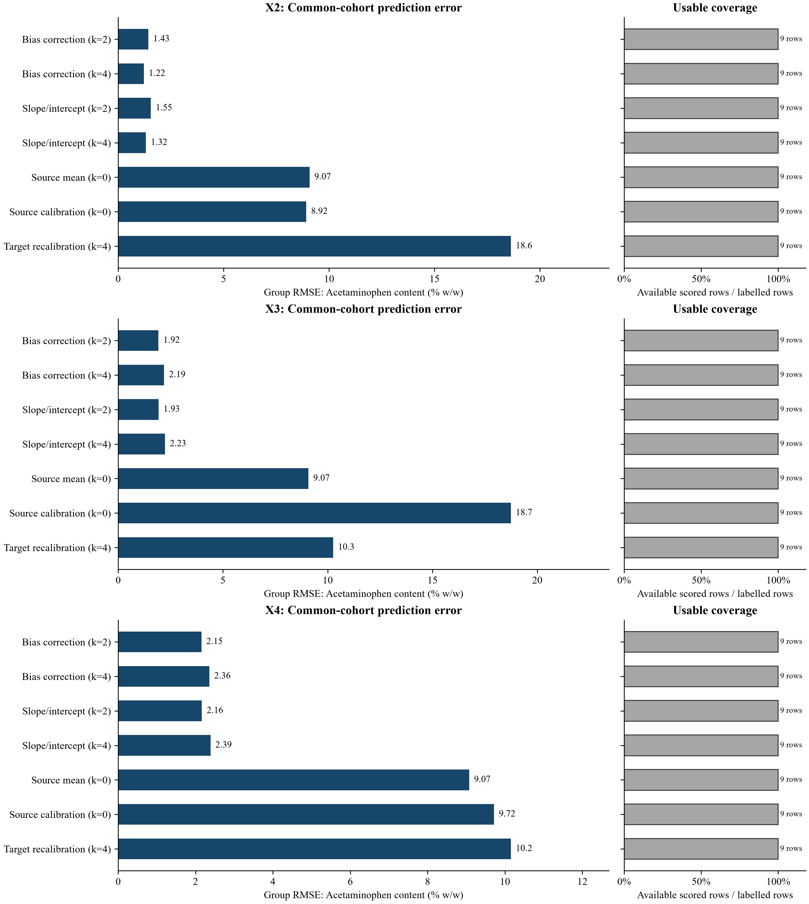
Figure 1. Leave-formulation-out transfer error on common scored formulations within each target domain, by correction and target-standard budget k. Each held-out formulation is excluded from source training and all adaptation standards. Separate available-row scores retain coverage information.
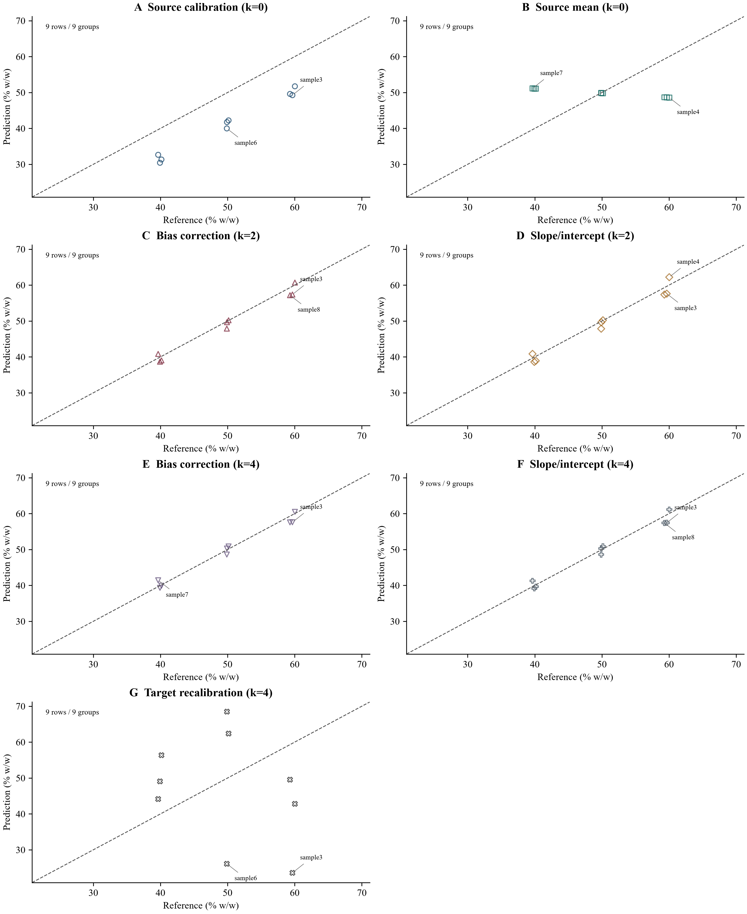
Prediction diagnostics - X2. Acetaminophen content (% w/w). Identical axes across methods; each point is a scored observation. Dashed line is identity. For nine or fewer rows, the two largest absolute errors are labelled; all identifiers remain in predictions.csv. No fit line, replicate uncertainty or additional validation is implied.
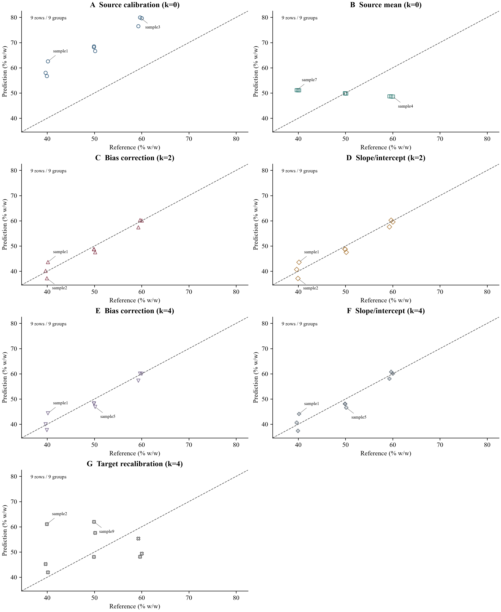
Prediction diagnostics - X3. Acetaminophen content (% w/w). Identical axes across methods; each point is a scored observation. Dashed line is identity. For nine or fewer rows, the two largest absolute errors are labelled; all identifiers remain in predictions.csv. No fit line, replicate uncertainty or additional validation is implied.
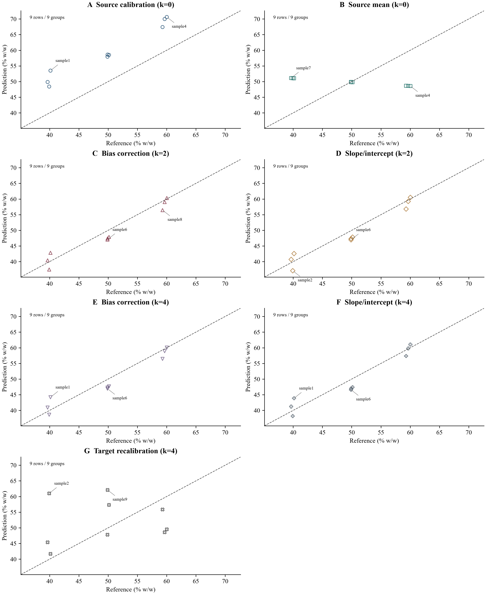
Prediction diagnostics - X4. Acetaminophen content (% w/w). Identical axes across methods; each point is a scored observation. Dashed line is identity. For nine or fewer rows, the two largest absolute errors are labelled; all identifiers remain in predictions.csv. No fit line, replicate uncertainty or additional validation is implied.
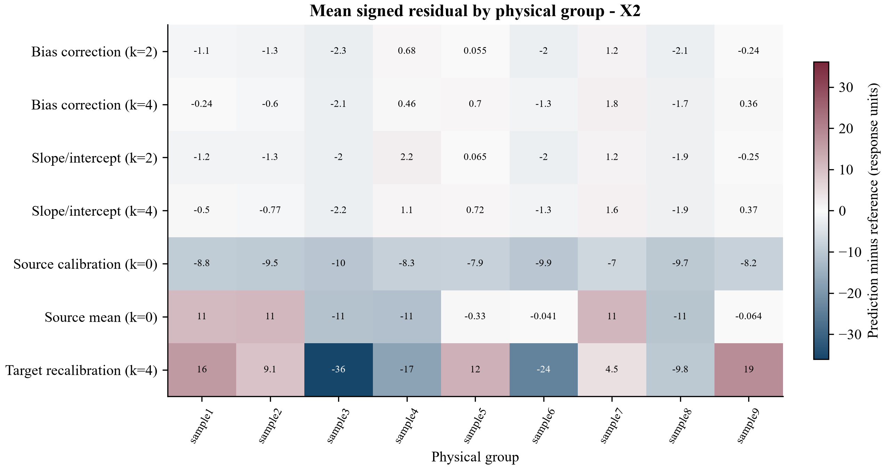
Mean signed errors per physical group. Positive means overprediction; the symmetric scale is centred at zero. The first 30 sorted groups are shown when necessary; group_diagnostics.csv retains every group. Group means can hide within-group variation.
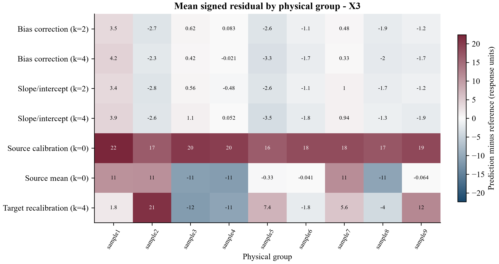
Mean signed errors per physical group. Positive means overprediction; the symmetric scale is centred at zero. The first 30 sorted groups are shown when necessary; group_diagnostics.csv retains every group. Group means can hide within-group variation.
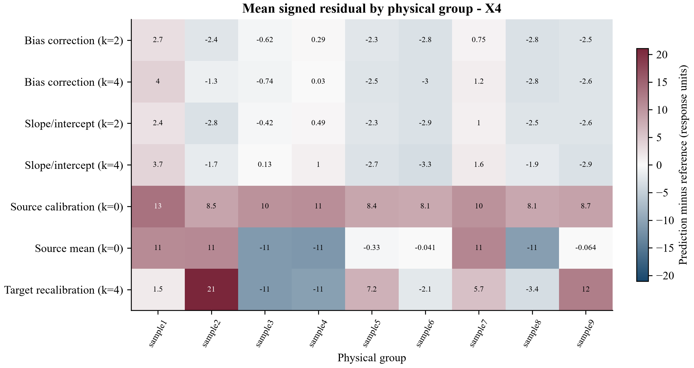
Mean signed errors per physical group. Positive means overprediction; the symmetric scale is centred at zero. The first 30 sorted groups are shown when necessary; group_diagnostics.csv retains every group. Group means can hide within-group variation.
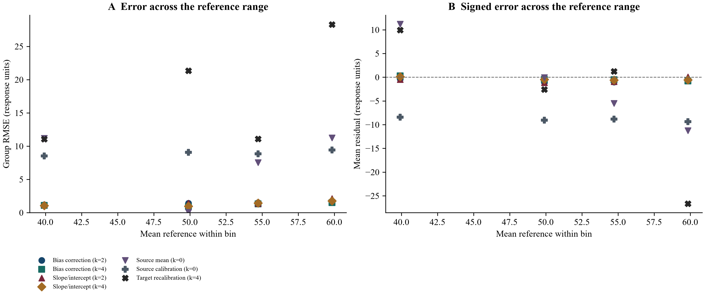
Up to four shared quantile bins are used after prediction, for diagnosis only. Dots are bin summaries, not a fitted trend. Bin and physical-group counts are in reference_range_diagnostics.csv; sparse bins do not establish a stable error profile.
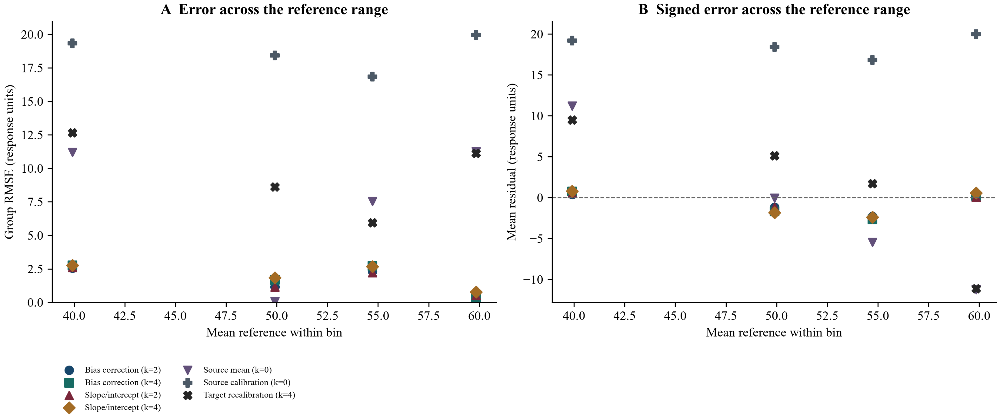
Up to four shared quantile bins are used after prediction, for diagnosis only. Dots are bin summaries, not a fitted trend. Bin and physical-group counts are in reference_range_diagnostics.csv; sparse bins do not establish a stable error profile.
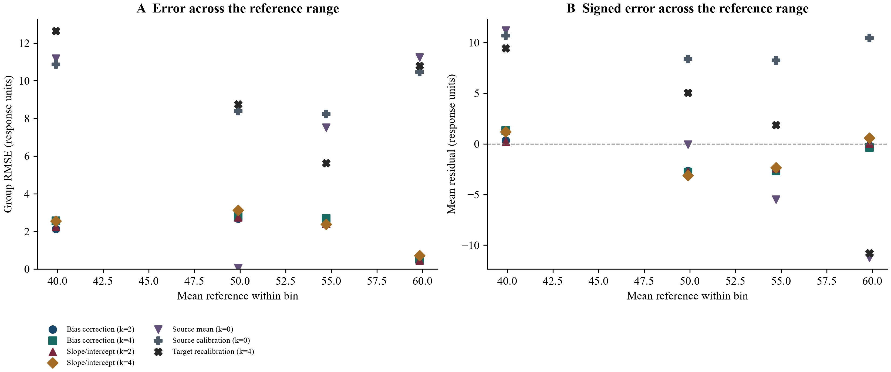
Up to four shared quantile bins are used after prediction, for diagnosis only. Dots are bin summaries, not a fitted trend. Bin and physical-group counts are in reference_range_diagnostics.csv; sparse bins do not establish a stable error profile.
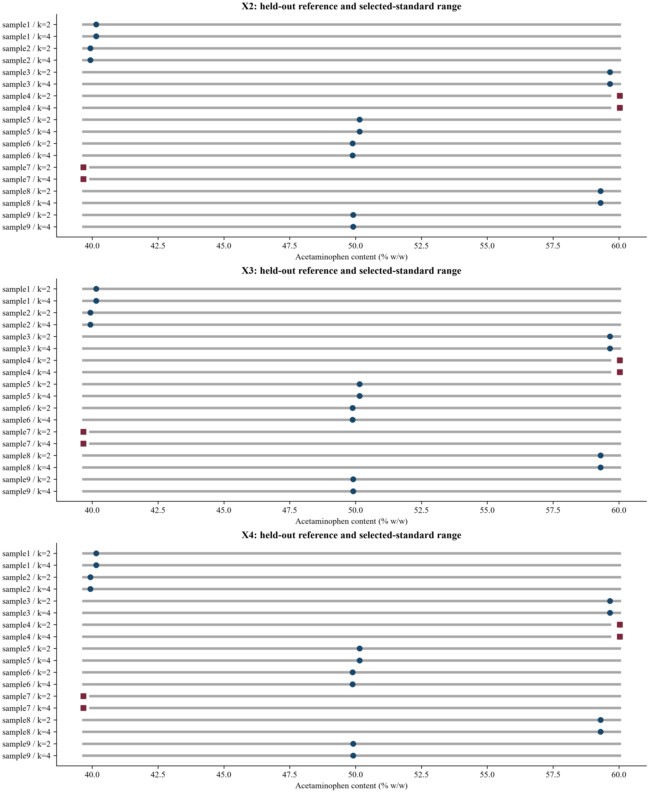
Horizontal intervals span the selected standards' references; dots mark the held-out reference and squares flag extrapolation beyond that range. This retrospective check never influences fitting or selection. First 30 rows per condition are displayed; complete table: standard_range_diagnostics.csv.
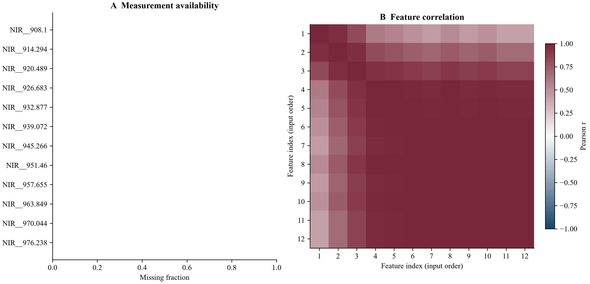
First 12 selected features in input order, without choosing them for apparent association. Correlations use available row pairs, with at least three pairs; blank cells are unavailable. Repeated observations can drive associations. Full availability statistics and preview feature names are exported; this view does not select model features.
Showing 24 of 42 rows; the complete table is in scores.csv.
Part 1/3.
| destination | method | budget | cohort | n | n_groups |
|---|---|---|---|---|---|
| X2 | Bias correction | 2 | all_available_rows | 9 | 9 |
| X2 | Bias correction | 2 | common_scored_rows | 9 | 9 |
| X2 | Bias correction | 4 | all_available_rows | 9 | 9 |
| X2 | Bias correction | 4 | common_scored_rows | 9 | 9 |
| X2 | Slope/intercept correction | 2 | all_available_rows | 9 | 9 |
| X2 | Slope/intercept correction | 2 | common_scored_rows | 9 | 9 |
| X2 | Slope/intercept correction | 4 | all_available_rows | 9 | 9 |
| X2 | Slope/intercept correction | 4 | common_scored_rows | 9 | 9 |
| X2 | Source mean | 0 | all_available_rows | 9 | 9 |
| X2 | Source mean | 0 | common_scored_rows | 9 | 9 |
| X2 | Source calibration | 0 | all_available_rows | 9 | 9 |
| X2 | Source calibration | 0 | common_scored_rows | 9 | 9 |
| X2 | Target spectral recalibration | 4 | all_available_rows | 9 | 9 |
| X2 | Target spectral recalibration | 4 | common_scored_rows | 9 | 9 |
| X3 | Bias correction | 2 | all_available_rows | 9 | 9 |
| X3 | Bias correction | 2 | common_scored_rows | 9 | 9 |
| X3 | Bias correction | 4 | all_available_rows | 9 | 9 |
| X3 | Bias correction | 4 | common_scored_rows | 9 | 9 |
| X3 | Slope/intercept correction | 2 | all_available_rows | 9 | 9 |
| X3 | Slope/intercept correction | 2 | common_scored_rows | 9 | 9 |
| X3 | Slope/intercept correction | 4 | all_available_rows | 9 | 9 |
| X3 | Slope/intercept correction | 4 | common_scored_rows | 9 | 9 |
| X3 | Source mean | 0 | all_available_rows | 9 | 9 |
| X3 | Source mean | 0 | common_scored_rows | 9 | 9 |
Part 2/3.
| destination | coverage | rmse | mae | bias | r2 |
|---|---|---|---|---|---|
| X2 | 1 | 1.43017 | 1.21336 | -0.790736 | 0.968565 |
| X2 | 1 | 1.43017 | 1.21336 | -0.790736 | 0.968565 |
| X2 | 1 | 1.21688 | 1.02462 | -0.293279 | 0.977242 |
| X2 | 1 | 1.21688 | 1.02462 | -0.293279 | 0.977242 |
| X2 | 1 | 1.54945 | 1.36217 | -0.598926 | 0.963102 |
| X2 | 1 | 1.54945 | 1.36217 | -0.598926 | 0.963102 |
| X2 | 1 | 1.31709 | 1.16872 | -0.318763 | 0.973339 |
| X2 | 1 | 1.31709 | 1.16872 | -0.318763 | 0.973339 |
| X2 | 1 | 9.07468 | 7.455 | 0 | -0.265625 |
| X2 | 1 | 9.07468 | 7.455 | 0 | -0.265625 |
| X2 | 1 | 8.91603 | 8.85545 | -8.85545 | -0.22176 |
| X2 | 1 | 8.91603 | 8.85545 | -8.85545 | -0.22176 |
| X2 | 1 | 18.6226 | 16.3898 | -2.91287 | -4.32998 |
| X2 | 1 | 18.6226 | 16.3898 | -2.91287 | -4.32998 |
| X3 | 1 | 1.92412 | 1.58 | -0.549234 | 0.943101 |
| X3 | 1 | 1.92412 | 1.58 | -0.549234 | 0.943101 |
| X3 | 1 | 2.19307 | 1.76155 | -0.664378 | 0.926082 |
| X3 | 1 | 2.19307 | 1.76155 | -0.664378 | 0.926082 |
| X3 | 1 | 1.92735 | 1.65586 | -0.550492 | 0.94291 |
| X3 | 1 | 1.92735 | 1.65586 | -0.550492 | 0.94291 |
| X3 | 1 | 2.23263 | 1.89274 | -0.553781 | 0.923392 |
| X3 | 1 | 2.23263 | 1.89274 | -0.553781 | 0.923392 |
| X3 | 1 | 9.07468 | 7.455 | 0 | -0.265625 |
| X3 | 1 | 9.07468 | 7.455 | 0 | -0.265625 |
Part 3/3.
| destination | group_rmse |
|---|---|
| X2 | 1.43017 |
| X2 | 1.43017 |
| X2 | 1.21688 |
| X2 | 1.21688 |
| X2 | 1.54945 |
| X2 | 1.54945 |
| X2 | 1.31709 |
| X2 | 1.31709 |
| X2 | 9.07468 |
| X2 | 9.07468 |
| X2 | 8.91603 |
| X2 | 8.91603 |
| X2 | 18.6226 |
| X2 | 18.6226 |
| X3 | 1.92412 |
| X3 | 1.92412 |
| X3 | 2.19307 |
| X3 | 2.19307 |
| X3 | 1.92735 |
| X3 | 1.92735 |
| X3 | 2.23263 |
| X3 | 2.23263 |
| X3 | 9.07468 |
| X3 | 9.07468 |
Complete tables are supplied as CSV; previews below retain the stated row and column limits.
Showing 12 of 129 rows; the complete table is in input_audit.csv.
| column | missing_cells | observed_cells | unique_observed |
|---|---|---|---|
| sample_id | 0 | 36 | 36 |
| group | 0 | 36 | 9 |
| domain | 0 | 36 | 4 |
| target | 0 | 36 | 14 |
| NIR__908.1 | 0 | 36 | 36 |
| NIR__914.294 | 0 | 36 | 36 |
| NIR__920.489 | 0 | 36 | 36 |
| NIR__926.683 | 0 | 36 | 36 |
| NIR__932.877 | 0 | 36 | 36 |
| NIR__939.072 | 0 | 36 | 36 |
| NIR__945.266 | 0 | 36 | 36 |
| NIR__951.46 | 0 | 36 | 36 |
Showing 12 of 36 rows; the complete table is in aggregated_input.csv. The report previews the first eight columns; the CSV preserves every column.
Part 1/2.
| group | domain | NIR__908.1 | NIR__914.294 | NIR__920.489 | NIR__926.683 |
|---|---|---|---|---|---|
| sample1 | X1 | 0.266672 | 0.264995 | 0.262822 | 0.261658 |
| sample1 | X2 | 0.223001 | 0.234733 | 0.242393 | 0.250581 |
| sample1 | X3 | 0.298473 | 0.256709 | 0.224127 | 0.191965 |
| sample1 | X4 | 0.243312 | 0.216917 | 0.195338 | 0.174291 |
| sample2 | X1 | 0.245335 | 0.248602 | 0.25066 | 0.252861 |
| sample2 | X2 | 0.198208 | 0.215299 | 0.228051 | 0.240033 |
| sample2 | X3 | 0.325988 | 0.287509 | 0.257801 | 0.228534 |
| sample2 | X4 | 0.269539 | 0.248622 | 0.231299 | 0.214184 |
| sample3 | X1 | 0.33972 | 0.341508 | 0.341871 | 0.342805 |
| sample3 | X2 | 0.285395 | 0.303655 | 0.315842 | 0.327592 |
| sample3 | X3 | 0.372253 | 0.327829 | 0.29379 | 0.260286 |
| sample3 | X4 | 0.316988 | 0.290792 | 0.269218 | 0.248267 |
Part 2/2.
| group | NIR__932.877 | NIR__939.072 |
|---|---|---|
| sample1 | 0.249656 | 0.239122 |
| sample1 | 0.241286 | 0.232499 |
| sample1 | 0.173869 | 0.15752 |
| sample1 | 0.159087 | 0.144407 |
| sample2 | 0.244592 | 0.236566 |
| sample2 | 0.235122 | 0.22942 |
| sample2 | 0.213052 | 0.19768 |
| sample2 | 0.201952 | 0.189707 |
| sample3 | 0.331655 | 0.322339 |
| sample3 | 0.31945 | 0.313805 |
| sample3 | 0.242298 | 0.224302 |
| sample3 | 0.233202 | 0.217943 |
Showing 24 of 27 rows; the complete table is in target_availability.csv.
| group | domain | has_spectral_measurement | has_recorded_reference |
|---|---|---|---|
| sample1 | X2 | True | True |
| sample1 | X3 | True | True |
| sample1 | X4 | True | True |
| sample2 | X2 | True | True |
| sample2 | X3 | True | True |
| sample2 | X4 | True | True |
| sample3 | X2 | True | True |
| sample3 | X3 | True | True |
| sample3 | X4 | True | True |
| sample4 | X2 | True | True |
| sample4 | X3 | True | True |
| sample4 | X4 | True | True |
| sample5 | X2 | True | True |
| sample5 | X3 | True | True |
| sample5 | X4 | True | True |
| sample6 | X2 | True | True |
| sample6 | X3 | True | True |
| sample6 | X4 | True | True |
| sample7 | X2 | True | True |
| sample7 | X3 | True | True |
| sample7 | X4 | True | True |
| sample8 | X2 | True | True |
| sample8 | X3 | True | True |
| sample8 | X4 | True | True |
Showing 24 of 189 rows; the complete table is in predictions.csv.
Part 1/2.
| fold | source | destination | group | reference | evaluation |
|---|---|---|---|---|---|
| X2:sample1 | X1 | X2 | sample1 | 40.15 | held_out_formulation |
| X2:sample1 | X1 | X2 | sample1 | 40.15 | held_out_formulation |
| X2:sample1 | X1 | X2 | sample1 | 40.15 | held_out_formulation |
| X2:sample1 | X1 | X2 | sample1 | 40.15 | held_out_formulation |
| X2:sample1 | X1 | X2 | sample1 | 40.15 | held_out_formulation |
| X2:sample1 | X1 | X2 | sample1 | 40.15 | held_out_formulation |
| X2:sample1 | X1 | X2 | sample1 | 40.15 | held_out_formulation |
| X2:sample2 | X1 | X2 | sample2 | 39.93 | held_out_formulation |
| X2:sample2 | X1 | X2 | sample2 | 39.93 | held_out_formulation |
| X2:sample2 | X1 | X2 | sample2 | 39.93 | held_out_formulation |
| X2:sample2 | X1 | X2 | sample2 | 39.93 | held_out_formulation |
| X2:sample2 | X1 | X2 | sample2 | 39.93 | held_out_formulation |
| X2:sample2 | X1 | X2 | sample2 | 39.93 | held_out_formulation |
| X2:sample2 | X1 | X2 | sample2 | 39.93 | held_out_formulation |
| X2:sample3 | X1 | X2 | sample3 | 59.66 | held_out_formulation |
| X2:sample3 | X1 | X2 | sample3 | 59.66 | held_out_formulation |
| X2:sample3 | X1 | X2 | sample3 | 59.66 | held_out_formulation |
| X2:sample3 | X1 | X2 | sample3 | 59.66 | held_out_formulation |
| X2:sample3 | X1 | X2 | sample3 | 59.66 | held_out_formulation |
| X2:sample3 | X1 | X2 | sample3 | 59.66 | held_out_formulation |
| X2:sample3 | X1 | X2 | sample3 | 59.66 | held_out_formulation |
| X2:sample4 | X1 | X2 | sample4 | 60.03 | held_out_formulation |
| X2:sample4 | X1 | X2 | sample4 | 60.03 | held_out_formulation |
| X2:sample4 | X1 | X2 | sample4 | 60.03 | held_out_formulation |
Part 2/2.
| fold | method | budget | prediction | residual | in_common_cohort |
|---|---|---|---|---|---|
| X2:sample1 | Source calibration | 0 | 31.3377 | -8.81226 | True |
| X2:sample1 | Source mean | 0 | 51.0662 | 10.9162 | True |
| X2:sample1 | Bias correction | 2 | 39.0281 | -1.12192 | True |
| X2:sample1 | Slope/intercept correction | 2 | 38.922 | -1.228 | True |
| X2:sample1 | Bias correction | 4 | 39.9122 | -0.237816 | True |
| X2:sample1 | Slope/intercept correction | 4 | 39.6477 | -0.502276 | True |
| X2:sample1 | Target spectral recalibration | 4 | 56.3582 | 16.2082 | True |
| X2:sample2 | Source calibration | 0 | 30.4264 | -9.50358 | True |
| X2:sample2 | Source mean | 0 | 51.0938 | 11.1638 | True |
| X2:sample2 | Bias correction | 2 | 38.6737 | -1.25626 | True |
| X2:sample2 | Slope/intercept correction | 2 | 38.6019 | -1.32808 | True |
| X2:sample2 | Bias correction | 4 | 39.3303 | -0.599698 | True |
| X2:sample2 | Slope/intercept correction | 4 | 39.1602 | -0.769796 | True |
| X2:sample2 | Target spectral recalibration | 4 | 49.0701 | 9.14011 | True |
| X2:sample3 | Source calibration | 0 | 49.2562 | -10.4038 | True |
| X2:sample3 | Source mean | 0 | 48.6275 | -11.0325 | True |
| X2:sample3 | Bias correction | 2 | 57.3779 | -2.28207 | True |
| X2:sample3 | Slope/intercept correction | 2 | 57.6148 | -2.04521 | True |
| X2:sample3 | Bias correction | 4 | 57.5922 | -2.06783 | True |
| X2:sample3 | Slope/intercept correction | 4 | 57.434 | -2.22599 | True |
| X2:sample3 | Target spectral recalibration | 4 | 23.5781 | -36.0819 | True |
| X2:sample4 | Source calibration | 0 | 51.731 | -8.29903 | True |
| X2:sample4 | Source mean | 0 | 48.5812 | -11.4488 | True |
| X2:sample4 | Bias correction | 2 | 60.7069 | 0.676869 | True |
Showing 24 of 162 rows; the complete table is in standards.csv.
Part 1/2.
| fold | budget | standard_group | source_prediction_on_target | reference | bias_adjustment |
|---|---|---|---|---|---|
| X2:sample1 | 2 | sample7 | 32.0686 | 39.66 | 7.69035 |
| X2:sample1 | 2 | sample4 | 52.2407 | 60.03 | 7.69035 |
| X2:sample1 | 4 | sample7 | 32.0686 | 39.66 | 8.57445 |
| X2:sample1 | 4 | sample6 | 40.259 | 49.89 | 8.57445 |
| X2:sample1 | 4 | sample8 | 50.0139 | 59.3 | 8.57445 |
| X2:sample1 | 4 | sample4 | 52.2407 | 60.03 | 8.57445 |
| X2:sample2 | 2 | sample7 | 31.4777 | 39.66 | 8.24732 |
| X2:sample2 | 2 | sample4 | 51.7176 | 60.03 | 8.24732 |
| X2:sample2 | 4 | sample7 | 31.4777 | 39.66 | 8.90389 |
| X2:sample2 | 4 | sample6 | 40.0941 | 49.89 | 8.90389 |
| X2:sample2 | 4 | sample8 | 49.975 | 59.3 | 8.90389 |
| X2:sample2 | 4 | sample4 | 51.7176 | 60.03 | 8.90389 |
| X2:sample3 | 2 | sample7 | 31.8488 | 39.66 | 8.12171 |
| X2:sample3 | 2 | sample4 | 51.5978 | 60.03 | 8.12171 |
| X2:sample3 | 4 | sample7 | 31.8488 | 39.66 | 8.33596 |
| X2:sample3 | 4 | sample1 | 30.8645 | 40.15 | 8.33596 |
| X2:sample3 | 4 | sample5 | 42.3351 | 50.15 | 8.33596 |
| X2:sample3 | 4 | sample4 | 51.5978 | 60.03 | 8.33596 |
| X2:sample4 | 2 | sample7 | 31.8827 | 39.66 | 8.9759 |
| X2:sample4 | 2 | sample3 | 49.4855 | 59.66 | 8.9759 |
| X2:sample4 | 4 | sample7 | 31.8827 | 39.66 | 8.76135 |
| X2:sample4 | 4 | sample1 | 30.697 | 40.15 | 8.76135 |
| X2:sample4 | 4 | sample5 | 42.5093 | 50.15 | 8.76135 |
| X2:sample4 | 4 | sample3 | 49.4855 | 59.66 | 8.76135 |
Part 2/2.
| fold | slope | intercept |
|---|---|---|
| X2:sample1 | 1.00981 | 7.27694 |
| X2:sample1 | 1.00981 | 7.27694 |
| X2:sample1 | 1.02149 | 7.63663 |
| X2:sample1 | 1.02149 | 7.63663 |
| X2:sample1 | 1.02149 | 7.63663 |
| X2:sample1 | 1.02149 | 7.63663 |
| X2:sample2 | 1.00643 | 7.97991 |
| X2:sample2 | 1.00643 | 7.97991 |
| X2:sample2 | 1.0132 | 8.33227 |
| X2:sample2 | 1.0132 | 8.33227 |
| X2:sample2 | 1.0132 | 8.33227 |
| X2:sample2 | 1.0132 | 8.33227 |
| X2:sample3 | 1.03144 | 6.80976 |
| X2:sample3 | 1.03144 | 6.80976 |
| X2:sample3 | 0.984332 | 8.94954 |
| X2:sample3 | 0.984332 | 8.94954 |
| X2:sample3 | 0.984332 | 8.94954 |
| X2:sample3 | 0.984332 | 8.94954 |
| X2:sample4 | 1.13618 | 3.43535 |
| X2:sample4 | 1.13618 | 3.43535 |
| X2:sample4 | 1.05033 | 6.81653 |
| X2:sample4 | 1.05033 | 6.81653 |
| X2:sample4 | 1.05033 | 6.81653 |
| X2:sample4 | 1.05033 | 6.81653 |
Showing 12 of 81 rows; the complete table is in splits.csv.
Part 1/2.
| fold | held_out_group | components | source_training_groups | budget | method |
|---|---|---|---|---|---|
| X2:sample1 | sample1 | 3 | sample2;sample3;sample4;sample5;sample6;sample7;sample8;sample9 | NaN | nan |
| X2:sample1 | NaN | NaN | NaN | 2 | Target spectral recalibration |
| X2:sample1 | NaN | 2 | NaN | 4 | Target spectral recalibration |
| X2:sample2 | sample2 | 3 | sample1;sample3;sample4;sample5;sample6;sample7;sample8;sample9 | NaN | nan |
| X2:sample2 | NaN | NaN | NaN | 2 | Target spectral recalibration |
| X2:sample2 | NaN | 2 | NaN | 4 | Target spectral recalibration |
| X2:sample3 | sample3 | 3 | sample1;sample2;sample4;sample5;sample6;sample7;sample8;sample9 | NaN | nan |
| X2:sample3 | NaN | NaN | NaN | 2 | Target spectral recalibration |
| X2:sample3 | NaN | 1 | NaN | 4 | Target spectral recalibration |
| X2:sample4 | sample4 | 3 | sample1;sample2;sample3;sample5;sample6;sample7;sample8;sample9 | NaN | nan |
| X2:sample4 | NaN | NaN | NaN | 2 | Target spectral recalibration |
| X2:sample4 | NaN | 1 | NaN | 4 | Target spectral recalibration |
Part 2/2.
| fold | status | training_standard_groups |
|---|---|---|
| X2:sample1 | NaN | NaN |
| X2:sample1 | not estimable: requires at least four selected standards for bounded tuning | NaN |
| X2:sample1 | fitted on selected target standards only | sample7;sample6;sample8;sample4 |
| X2:sample2 | NaN | NaN |
| X2:sample2 | not estimable: requires at least four selected standards for bounded tuning | NaN |
| X2:sample2 | fitted on selected target standards only | sample7;sample6;sample8;sample4 |
| X2:sample3 | NaN | NaN |
| X2:sample3 | not estimable: requires at least four selected standards for bounded tuning | NaN |
| X2:sample3 | fitted on selected target standards only | sample7;sample1;sample5;sample4 |
| X2:sample4 | NaN | NaN |
| X2:sample4 | not estimable: requires at least four selected standards for bounded tuning | NaN |
| X2:sample4 | fitted on selected target standards only | sample7;sample1;sample5;sample3 |
Showing 24 of 125 rows; the complete table is in feature_quality.csv.
Part 1/2.
| feature | observed_rows | missing_fraction | minimum | median | maximum |
|---|---|---|---|---|---|
| NIR__908.1 | 36 | 0 | 0.166942 | 0.260803 | 0.449156 |
| NIR__914.294 | 36 | 0 | 0.143574 | 0.256731 | 0.403913 |
| NIR__920.489 | 36 | 0 | 0.123701 | 0.251032 | 0.370617 |
| NIR__926.683 | 36 | 0 | 0.104484 | 0.249424 | 0.342805 |
| NIR__932.877 | 36 | 0 | 0.089708 | 0.240147 | 0.331655 |
| NIR__939.072 | 36 | 0 | 0.0763833 | 0.2297 | 0.322339 |
| NIR__945.266 | 36 | 0 | 0.0674775 | 0.226181 | 0.318063 |
| NIR__951.46 | 36 | 0 | 0.0632591 | 0.218172 | 0.311096 |
| NIR__957.655 | 36 | 0 | 0.0580492 | 0.218871 | 0.311265 |
| NIR__963.849 | 36 | 0 | 0.0564146 | 0.215071 | 0.307684 |
| NIR__970.044 | 36 | 0 | 0.0535648 | 0.217745 | 0.310307 |
| NIR__976.238 | 36 | 0 | 0.0534838 | 0.217379 | 0.309929 |
| NIR__982.432 | 36 | 0 | 0.0513514 | 0.222109 | 0.314634 |
| NIR__988.627 | 36 | 0 | 0.0525983 | 0.22196 | 0.314419 |
| NIR__994.821 | 36 | 0 | 0.0544182 | 0.219095 | 0.312103 |
| NIR__1001.015 | 36 | 0 | 0.0546104 | 0.220428 | 0.313749 |
| NIR__1007.21 | 36 | 0 | 0.0551155 | 0.220768 | 0.314308 |
| NIR__1013.404 | 36 | 0 | 0.0533873 | 0.222673 | 0.31701 |
| NIR__1019.598 | 36 | 0 | 0.0529563 | 0.222836 | 0.318176 |
| NIR__1025.793 | 36 | 0 | 0.0550275 | 0.218131 | 0.311873 |
| NIR__1031.987 | 36 | 0 | 0.0506735 | 0.22249 | 0.318706 |
| NIR__1038.181 | 36 | 0 | 0.053209 | 0.217634 | 0.311407 |
| NIR__1044.376 | 36 | 0 | 0.0517672 | 0.218217 | 0.312773 |
| NIR__1050.57 | 36 | 0 | 0.0508975 | 0.218513 | 0.313009 |
Part 2/2.
| feature | distinct_values |
|---|---|
| NIR__908.1 | 36 |
| NIR__914.294 | 36 |
| NIR__920.489 | 36 |
| NIR__926.683 | 36 |
| NIR__932.877 | 36 |
| NIR__939.072 | 36 |
| NIR__945.266 | 36 |
| NIR__951.46 | 36 |
| NIR__957.655 | 36 |
| NIR__963.849 | 36 |
| NIR__970.044 | 36 |
| NIR__976.238 | 36 |
| NIR__982.432 | 36 |
| NIR__988.627 | 36 |
| NIR__994.821 | 36 |
| NIR__1001.015 | 36 |
| NIR__1007.21 | 36 |
| NIR__1013.404 | 36 |
| NIR__1019.598 | 36 |
| NIR__1025.793 | 36 |
| NIR__1031.987 | 36 |
| NIR__1038.181 | 36 |
| NIR__1044.376 | 36 |
| NIR__1050.57 | 36 |
Part 1/3.
| feature | NIR__908.1 | NIR__914.294 | NIR__920.489 | NIR__926.683 | NIR__932.877 |
|---|---|---|---|---|---|
| NIR__908.1 | 1 | 0.953703 | 0.821488 | 0.605984 | 0.552806 |
| NIR__914.294 | 0.953703 | 1 | 0.954917 | 0.817082 | 0.777626 |
| NIR__920.489 | 0.821488 | 0.954917 | 1 | 0.951388 | 0.92916 |
| NIR__926.683 | 0.605984 | 0.817082 | 0.951388 | 1 | 0.997692 |
| NIR__932.877 | 0.552806 | 0.777626 | 0.92916 | 0.997692 | 1 |
| NIR__939.072 | 0.493667 | 0.732114 | 0.901225 | 0.990615 | 0.997518 |
| NIR__945.266 | 0.442248 | 0.691167 | 0.874389 | 0.980933 | 0.991606 |
| NIR__951.46 | 0.523293 | 0.754485 | 0.914726 | 0.993609 | 0.998427 |
| NIR__957.655 | 0.45035 | 0.697246 | 0.878144 | 0.981943 | 0.99211 |
| NIR__963.849 | 0.498411 | 0.73484 | 0.902157 | 0.989583 | 0.996302 |
| NIR__970.044 | 0.420986 | 0.673212 | 0.861666 | 0.974873 | 0.987174 |
| NIR__976.238 | 0.426699 | 0.677667 | 0.864537 | 0.975814 | 0.987785 |
Part 2/3.
| feature | NIR__939.072 | NIR__945.266 | NIR__951.46 | NIR__957.655 | NIR__963.849 |
|---|---|---|---|---|---|
| NIR__908.1 | 0.493667 | 0.442248 | 0.523293 | 0.45035 | 0.498411 |
| NIR__914.294 | 0.732114 | 0.691167 | 0.754485 | 0.697246 | 0.73484 |
| NIR__920.489 | 0.901225 | 0.874389 | 0.914726 | 0.878144 | 0.902157 |
| NIR__926.683 | 0.990615 | 0.980933 | 0.993609 | 0.981943 | 0.989583 |
| NIR__932.877 | 0.997518 | 0.991606 | 0.998427 | 0.99211 | 0.996302 |
| NIR__939.072 | 1 | 0.998222 | 0.998673 | 0.998165 | 0.998589 |
| NIR__945.266 | 0.998222 | 1 | 0.995202 | 0.999573 | 0.996895 |
| NIR__951.46 | 0.998673 | 0.995202 | 1 | 0.996487 | 0.99948 |
| NIR__957.655 | 0.998165 | 0.999573 | 0.996487 | 1 | 0.998322 |
| NIR__963.849 | 0.998589 | 0.996895 | 0.99948 | 0.998322 | 1 |
| NIR__970.044 | 0.995514 | 0.998904 | 0.99321 | 0.999388 | 0.996164 |
| NIR__976.238 | 0.99571 | 0.998763 | 0.993864 | 0.999471 | 0.996719 |
Part 3/3.
| feature | NIR__970.044 | NIR__976.238 |
|---|---|---|
| NIR__908.1 | 0.420986 | 0.426699 |
| NIR__914.294 | 0.673212 | 0.677667 |
| NIR__920.489 | 0.861666 | 0.864537 |
| NIR__926.683 | 0.974873 | 0.975814 |
| NIR__932.877 | 0.987174 | 0.987785 |
| NIR__939.072 | 0.995514 | 0.99571 |
| NIR__945.266 | 0.998904 | 0.998763 |
| NIR__951.46 | 0.99321 | 0.993864 |
| NIR__957.655 | 0.999388 | 0.999471 |
| NIR__963.849 | 0.996164 | 0.996719 |
| NIR__970.044 | 1 | 0.999953 |
| NIR__976.238 | 0.999953 | 1 |
Showing 24 of 189 rows; the complete table is in group_diagnostics.csv.
Part 1/2.
| destination | method | budget | group | n | reference_mean |
|---|---|---|---|---|---|
| X2 | Bias correction | 2 | sample1 | 1 | 40.15 |
| X2 | Bias correction | 2 | sample2 | 1 | 39.93 |
| X2 | Bias correction | 2 | sample3 | 1 | 59.66 |
| X2 | Bias correction | 2 | sample4 | 1 | 60.03 |
| X2 | Bias correction | 2 | sample5 | 1 | 50.15 |
| X2 | Bias correction | 2 | sample6 | 1 | 49.89 |
| X2 | Bias correction | 2 | sample7 | 1 | 39.66 |
| X2 | Bias correction | 2 | sample8 | 1 | 59.3 |
| X2 | Bias correction | 2 | sample9 | 1 | 49.91 |
| X2 | Bias correction | 4 | sample1 | 1 | 40.15 |
| X2 | Bias correction | 4 | sample2 | 1 | 39.93 |
| X2 | Bias correction | 4 | sample3 | 1 | 59.66 |
| X2 | Bias correction | 4 | sample4 | 1 | 60.03 |
| X2 | Bias correction | 4 | sample5 | 1 | 50.15 |
| X2 | Bias correction | 4 | sample6 | 1 | 49.89 |
| X2 | Bias correction | 4 | sample7 | 1 | 39.66 |
| X2 | Bias correction | 4 | sample8 | 1 | 59.3 |
| X2 | Bias correction | 4 | sample9 | 1 | 49.91 |
| X2 | Slope/intercept correction | 2 | sample1 | 1 | 40.15 |
| X2 | Slope/intercept correction | 2 | sample2 | 1 | 39.93 |
| X2 | Slope/intercept correction | 2 | sample3 | 1 | 59.66 |
| X2 | Slope/intercept correction | 2 | sample4 | 1 | 60.03 |
| X2 | Slope/intercept correction | 2 | sample5 | 1 | 50.15 |
| X2 | Slope/intercept correction | 2 | sample6 | 1 | 49.89 |
Part 2/2.
| destination | prediction_mean | rmse | mae | bias |
|---|---|---|---|---|
| X2 | 39.0281 | 1.12192 | 1.12192 | -1.12192 |
| X2 | 38.6737 | 1.25626 | 1.25626 | -1.25626 |
| X2 | 57.3779 | 2.28207 | 2.28207 | -2.28207 |
| X2 | 60.7069 | 0.676869 | 0.676869 | 0.676869 |
| X2 | 50.2055 | 0.0554654 | 0.0554654 | 0.0554654 |
| X2 | 47.8849 | 2.00509 | 2.00509 | -2.00509 |
| X2 | 40.8295 | 1.16948 | 1.16948 | 1.16948 |
| X2 | 57.1891 | 2.11089 | 2.11089 | -2.11089 |
| X2 | 49.6678 | 0.242204 | 0.242204 | -0.242204 |
| X2 | 39.9122 | 0.237816 | 0.237816 | -0.237816 |
| X2 | 39.3303 | 0.599698 | 0.599698 | -0.599698 |
| X2 | 57.5922 | 2.06783 | 2.06783 | -2.06783 |
| X2 | 60.4923 | 0.462323 | 0.462323 | 0.462323 |
| X2 | 50.8513 | 0.701301 | 0.701301 | 0.701301 |
| X2 | 48.6025 | 1.28752 | 1.28752 | -1.28752 |
| X2 | 41.427 | 1.76702 | 1.76702 | 1.76702 |
| X2 | 57.5623 | 1.7377 | 1.7377 | -1.7377 |
| X2 | 50.2704 | 0.360404 | 0.360404 | 0.360404 |
| X2 | 38.922 | 1.228 | 1.228 | -1.228 |
| X2 | 38.6019 | 1.32808 | 1.32808 | -1.32808 |
| X2 | 57.6148 | 2.04521 | 2.04521 | -2.04521 |
| X2 | 62.2113 | 2.18128 | 2.18128 | 2.18128 |
| X2 | 50.2148 | 0.0647519 | 0.0647519 | 0.0647519 |
| X2 | 47.8512 | 2.03881 | 2.03881 | -2.03881 |
Showing 24 of 84 rows; the complete table is in reference_range_diagnostics.csv.
Part 1/3.
| destination | method | budget | reference_bin | lower_reference | upper_reference |
|---|---|---|---|---|---|
| X2 | Bias correction | 2 | 0 | 39.66 | 40.15 |
| X2 | Bias correction | 2 | 1 | 40.15 | 49.91 |
| X2 | Bias correction | 2 | 2 | 49.91 | 59.3 |
| X2 | Bias correction | 2 | 3 | 59.3 | 60.03 |
| X2 | Bias correction | 4 | 0 | 39.66 | 40.15 |
| X2 | Bias correction | 4 | 1 | 40.15 | 49.91 |
| X2 | Bias correction | 4 | 2 | 49.91 | 59.3 |
| X2 | Bias correction | 4 | 3 | 59.3 | 60.03 |
| X2 | Slope/intercept correction | 2 | 0 | 39.66 | 40.15 |
| X2 | Slope/intercept correction | 2 | 1 | 40.15 | 49.91 |
| X2 | Slope/intercept correction | 2 | 2 | 49.91 | 59.3 |
| X2 | Slope/intercept correction | 2 | 3 | 59.3 | 60.03 |
| X2 | Slope/intercept correction | 4 | 0 | 39.66 | 40.15 |
| X2 | Slope/intercept correction | 4 | 1 | 40.15 | 49.91 |
| X2 | Slope/intercept correction | 4 | 2 | 49.91 | 59.3 |
| X2 | Slope/intercept correction | 4 | 3 | 59.3 | 60.03 |
| X2 | Source mean | 0 | 0 | 39.66 | 40.15 |
| X2 | Source mean | 0 | 1 | 40.15 | 49.91 |
| X2 | Source mean | 0 | 2 | 49.91 | 59.3 |
| X2 | Source mean | 0 | 3 | 59.3 | 60.03 |
| X2 | Source calibration | 0 | 0 | 39.66 | 40.15 |
| X2 | Source calibration | 0 | 1 | 40.15 | 49.91 |
| X2 | Source calibration | 0 | 2 | 49.91 | 59.3 |
| X2 | Source calibration | 0 | 3 | 59.3 | 60.03 |
Part 2/3.
| destination | reference_mean | n | n_groups | rmse | group_rmse |
|---|---|---|---|---|---|
| X2 | 39.9133 | 3 | 3 | 1.18386 | 1.18386 |
| X2 | 49.9 | 2 | 2 | 1.42812 | 1.42812 |
| X2 | 54.725 | 2 | 2 | 1.49314 | 1.49314 |
| X2 | 59.845 | 2 | 2 | 1.68315 | 1.68315 |
| X2 | 39.9133 | 3 | 3 | 1.08606 | 1.08606 |
| X2 | 49.9 | 2 | 2 | 0.945407 | 0.945407 |
| X2 | 54.725 | 2 | 2 | 1.32503 | 1.32503 |
| X2 | 59.845 | 2 | 2 | 1.49828 | 1.49828 |
| X2 | 39.9133 | 3 | 3 | 1.2496 | 1.2496 |
| X2 | 49.9 | 2 | 2 | 1.45208 | 1.45208 |
| X2 | 54.725 | 2 | 2 | 1.37202 | 1.37202 |
| X2 | 59.845 | 2 | 2 | 2.11434 | 2.11434 |
| X2 | 39.9133 | 3 | 3 | 1.07419 | 1.07419 |
| X2 | 49.9 | 2 | 2 | 0.953279 | 0.953279 |
| X2 | 54.725 | 2 | 2 | 1.43556 | 1.43556 |
| X2 | 59.845 | 2 | 2 | 1.76233 | 1.76233 |
| X2 | 39.9133 | 3 | 3 | 11.1848 | 11.1848 |
| X2 | 49.9 | 2 | 2 | 0.0536918 | 0.0536918 |
| X2 | 54.725 | 2 | 2 | 7.51848 | 7.51848 |
| X2 | 59.845 | 2 | 2 | 11.2426 | 11.2426 |
| X2 | 39.9133 | 3 | 3 | 8.50783 | 8.50783 |
| X2 | 49.9 | 2 | 2 | 9.0704 | 9.0704 |
| X2 | 54.725 | 2 | 2 | 8.85027 | 8.85027 |
| X2 | 59.845 | 2 | 2 | 9.41044 | 9.41044 |
Part 3/3.
| destination | bias |
|---|---|
| X2 | -0.402899 |
| X2 | -1.12365 |
| X2 | -1.02771 |
| X2 | -0.802602 |
| X2 | 0.309835 |
| X2 | -0.463556 |
| X2 | -0.518198 |
| X2 | -0.802753 |
| X2 | -0.455833 |
| X2 | -1.14221 |
| X2 | -0.937248 |
| X2 | 0.0680373 |
| X2 | 0.115191 |
| X2 | -0.465979 |
| X2 | -0.588729 |
| X2 | -0.552512 |
| X2 | 11.1825 |
| X2 | -0.0525 |
| X2 | -5.48062 |
| X2 | -11.2406 |
| X2 | -8.44278 |
| X2 | -9.0287 |
| X2 | -8.80526 |
| X2 | -9.35141 |
Part 1/2.
| destination | method | budget | baseline | paired_rows | paired_groups |
|---|---|---|---|---|---|
| X2 | Bias correction | 2 | source_pls | 9 | 9 |
| X2 | Bias correction | 4 | source_pls | 9 | 9 |
| X2 | Slope/intercept correction | 2 | source_pls | 9 | 9 |
| X2 | Slope/intercept correction | 4 | source_pls | 9 | 9 |
| X2 | Source mean | 0 | source_pls | 9 | 9 |
| X2 | Target spectral recalibration | 4 | source_pls | 9 | 9 |
| X3 | Bias correction | 2 | source_pls | 9 | 9 |
| X3 | Bias correction | 4 | source_pls | 9 | 9 |
| X3 | Slope/intercept correction | 2 | source_pls | 9 | 9 |
| X3 | Slope/intercept correction | 4 | source_pls | 9 | 9 |
| X3 | Source mean | 0 | source_pls | 9 | 9 |
| X3 | Target spectral recalibration | 4 | source_pls | 9 | 9 |
| X4 | Bias correction | 2 | source_pls | 9 | 9 |
| X4 | Bias correction | 4 | source_pls | 9 | 9 |
| X4 | Slope/intercept correction | 2 | source_pls | 9 | 9 |
| X4 | Slope/intercept correction | 4 | source_pls | 9 | 9 |
| X4 | Source mean | 0 | source_pls | 9 | 9 |
| X4 | Target spectral recalibration | 4 | source_pls | 9 | 9 |
Part 2/2.
| destination | method_group_rmse | baseline_group_rmse | delta_group_rmse | interpretation |
|---|---|---|---|---|
| X2 | 1.43017 | 8.91603 | -7.48586 | negative difference favours the method on this paired subset |
| X2 | 1.21688 | 8.91603 | -7.69915 | negative difference favours the method on this paired subset |
| X2 | 1.54945 | 8.91603 | -7.36658 | negative difference favours the method on this paired subset |
| X2 | 1.31709 | 8.91603 | -7.59895 | negative difference favours the method on this paired subset |
| X2 | 9.07468 | 8.91603 | 0.158646 | negative difference favours the method on this paired subset |
| X2 | 18.6226 | 8.91603 | 9.70662 | negative difference favours the method on this paired subset |
| X3 | 1.92412 | 18.7407 | -16.8166 | negative difference favours the method on this paired subset |
| X3 | 2.19307 | 18.7407 | -16.5476 | negative difference favours the method on this paired subset |
| X3 | 1.92735 | 18.7407 | -16.8133 | negative difference favours the method on this paired subset |
| X3 | 2.23263 | 18.7407 | -16.508 | negative difference favours the method on this paired subset |
| X3 | 9.07468 | 18.7407 | -9.66599 | negative difference favours the method on this paired subset |
| X3 | 10.2609 | 18.7407 | -8.47975 | negative difference favours the method on this paired subset |
| X4 | 2.15305 | 9.71641 | -7.56336 | negative difference favours the method on this paired subset |
| X4 | 2.35637 | 9.71641 | -7.36004 | negative difference favours the method on this paired subset |
| X4 | 2.16404 | 9.71641 | -7.55237 | negative difference favours the method on this paired subset |
| X4 | 2.38679 | 9.71641 | -7.32962 | negative difference favours the method on this paired subset |
| X4 | 9.07468 | 9.71641 | -0.641728 | negative difference favours the method on this paired subset |
| X4 | 10.1528 | 9.71641 | 0.43638 | negative difference favours the method on this paired subset |
Showing 24 of 54 rows; the complete table is in standard_range_diagnostics.csv.
Part 1/2.
| fold | destination | budget | held_out_group | standard_reference_min | standard_reference_max |
|---|---|---|---|---|---|
| X2:sample1 | X2 | 2 | sample1 | 39.66 | 60.03 |
| X2:sample1 | X2 | 4 | sample1 | 39.66 | 60.03 |
| X2:sample2 | X2 | 2 | sample2 | 39.66 | 60.03 |
| X2:sample2 | X2 | 4 | sample2 | 39.66 | 60.03 |
| X2:sample3 | X2 | 2 | sample3 | 39.66 | 60.03 |
| X2:sample3 | X2 | 4 | sample3 | 39.66 | 60.03 |
| X2:sample4 | X2 | 2 | sample4 | 39.66 | 59.66 |
| X2:sample4 | X2 | 4 | sample4 | 39.66 | 59.66 |
| X2:sample5 | X2 | 2 | sample5 | 39.66 | 60.03 |
| X2:sample5 | X2 | 4 | sample5 | 39.66 | 60.03 |
| X2:sample6 | X2 | 2 | sample6 | 39.66 | 60.03 |
| X2:sample6 | X2 | 4 | sample6 | 39.66 | 60.03 |
| X2:sample7 | X2 | 2 | sample7 | 39.93 | 60.03 |
| X2:sample7 | X2 | 4 | sample7 | 39.93 | 60.03 |
| X2:sample8 | X2 | 2 | sample8 | 39.66 | 60.03 |
| X2:sample8 | X2 | 4 | sample8 | 39.66 | 60.03 |
| X2:sample9 | X2 | 2 | sample9 | 39.66 | 60.03 |
| X2:sample9 | X2 | 4 | sample9 | 39.66 | 60.03 |
| X3:sample1 | X3 | 2 | sample1 | 39.66 | 60.03 |
| X3:sample1 | X3 | 4 | sample1 | 39.66 | 60.03 |
| X3:sample2 | X3 | 2 | sample2 | 39.66 | 60.03 |
| X3:sample2 | X3 | 4 | sample2 | 39.66 | 60.03 |
| X3:sample3 | X3 | 2 | sample3 | 39.66 | 60.03 |
| X3:sample3 | X3 | 4 | sample3 | 39.66 | 60.03 |
Part 2/2.
| fold | held_out_reference | outside_standard_reference_range |
|---|---|---|
| X2:sample1 | 40.15 | False |
| X2:sample1 | 40.15 | False |
| X2:sample2 | 39.93 | False |
| X2:sample2 | 39.93 | False |
| X2:sample3 | 59.66 | False |
| X2:sample3 | 59.66 | False |
| X2:sample4 | 60.03 | True |
| X2:sample4 | 60.03 | True |
| X2:sample5 | 50.15 | False |
| X2:sample5 | 50.15 | False |
| X2:sample6 | 49.89 | False |
| X2:sample6 | 49.89 | False |
| X2:sample7 | 39.66 | True |
| X2:sample7 | 39.66 | True |
| X2:sample8 | 59.3 | False |
| X2:sample8 | 59.3 | False |
| X2:sample9 | 49.91 | False |
| X2:sample9 | 49.91 | False |
| X3:sample1 | 40.15 | False |
| X3:sample1 | 40.15 | False |
| X3:sample2 | 39.93 | False |
| X3:sample2 | 39.93 | False |
| X3:sample3 | 59.66 | False |
| X3:sample3 | 59.66 | False |
| capability | available | level | reason |
|---|---|---|---|
| input_quality | True | descriptive | Parsed rows and selected field availability are retained. |
| paired_descriptions | True | descriptive | Available finite reference/comparison pairs; no missing reference is invented. |
| fitted_model | False | fitting | No estimable requested factor model was fitted. |
| held_out_evaluation | True | evaluation | Recorded disjoint training/held-out units; interpret small samples as exploratory. |
| conditional_uncertainty | False | inference | Required independence, variance, sample structure or prediction provenance is unavailable. |
{
"input_sha256": "81705cd172b9099f1158b35a4a794befa386b0f4d4111deb443ad0648cee1e19",
"target": "target",
"features": [
"NIR__908.1",
"NIR__914.294",
"NIR__920.489",
"NIR__926.683",
"NIR__932.877",
"NIR__939.072",
"NIR__945.266",
"NIR__951.46",
"NIR__957.655",
"NIR__963.849",
"NIR__970.044",
"NIR__976.238",
"NIR__982.432",
"NIR__988.627",
"NIR__994.821",
"NIR__1001.015",
"NIR__1007.21",
"NIR__1013.404",
"NIR__1019.598",
"NIR__1025.793",
"NIR__1031.987",
"NIR__1038.181",
"NIR__1044.376",
"NIR__1050.57",
"NIR__1056.764",
"NIR__1062.959",
"NIR__1069.153",
"NIR__1075.348",
"NIR__1081.542",
"NIR__1087.736",
"NIR__1093.931",
"NIR__1100.125",
"NIR__1106.319",
"NIR__1112.514",
"NIR__1118.708",
"NIR__1124.902",
"NIR__1131.097",
"NIR__1137.291",
"NIR__1143.485",
"NIR__1149.68",
"NIR__1155.874",
"NIR__1162.069",
"NIR__1168.263",
"NIR__1174.457",
"NIR__1180.652",
"NIR__1186.846",
"NIR__1193.04",
"NIR__1199.235",
"NIR__1205.429",
"NIR__1211.623",
"NIR__1217.818",
"NIR__1224.012",
"NIR__1230.206",
"NIR__1236.401",
"NIR__1242.595",
"NIR__1248.789",
"NIR__1254.984",
"NIR__1261.178",
"NIR__1267.373",
"NIR__1273.567",
"NIR__1279.761",
"NIR__1285.956",
"NIR__1292.15",
"NIR__1298.344",
"NIR__1304.539",
"NIR__1310.733",
"NIR__1316.927",
"NIR__1323.122",
"NIR__1329.316",
"NIR__1335.51",
"NIR__1341.705",
"NIR__1347.899",
"NIR__1354.094",
"NIR__1360.288",
"NIR__1366.482",
"NIR__1372.677",
"NIR__1378.871",
"NIR__1385.065",
"NIR__1391.26",
"NIR__1397.454",
"NIR__1403.648",
"NIR__1409.843",
"NIR__1416.037",
"NIR__1422.231",
"NIR__1428.426",
"NIR__1434.62",
"NIR__1440.814",
"NIR__1447.009",
"NIR__1453.203",
"NIR__1459.398",
"NIR__1465.592",
"NIR__1471.786",
"NIR__1477.981",
"NIR__1484.175",
"NIR__1490.369",
"NIR__1496.564",
"NIR__1502.758",
"NIR__1508.952",
"NIR__1515.147",
"NIR__1521.341",
"NIR__1527.535",
"NIR__1533.73",
"NIR__1539.924",
"NIR__1546.119",
"NIR__1552.313",
"NIR__1558.507",
"NIR__1564.702",
"NIR__1570.896",
"NIR__1577.09",
"NIR__1583.285",
"NIR__1589.479",
"NIR__1595.673",
"NIR__1601.868",
"NIR__1608.062",
"NIR__1614.256",
"NIR__1620.451",
"NIR__1626.645",
"NIR__1632.839",
"NIR__1639.034",
"NIR__1645.228",
"NIR__1651.423",
"NIR__1657.617",
"NIR__1663.811",
"NIR__1670.006",
"NIR__1676.2"
],
"source": "X1",
"budgets": [
2,
4
],
"protocol": "leave one physical formulation out of every fitting/adaptation domain",
"aggregation_annotations": {
"acquisitions_averaged": "acquisitions_averaged",
"reference_linked_from_source": "reference_linked_from_source"
},
"aggregated_column_mapping": {},
"reference_consistency": {
"absolute_tolerance_response_units": 0.0,
"relative_tolerance": 1e-08,
"definition": "within-formulation span <= atol + rtol * maximum absolute recorded reference"
},
"destinations": [
"X2",
"X3",
"X4"
],
"method_availability": "Target spectral recalibration is evaluated only for budgets >=4. Smaller budgets support correction only; unavailable choices are recorded in splits.csv.",
"n_rows": 36,
"n_groups": 9,
"software_source_sha256": "dec52ce39b6855c648f44d07e17a6199ed71928fc4a1741e637e1d8aeba6eb98",
"source_hash_definition": "SHA256 of sorted relative Python paths and file bytes, each terminated by a NUL byte",
"application": "calibshift",
"software_version": "0.5.2",
"configuration_schema_version": "1.2",
"call_parameters": {
"target": "target",
"id_col": "sample_id",
"group_col": "group",
"domain_col": "domain",
"source": "X1",
"destinations": [
"X2",
"X3",
"X4"
],
"feature_columns": [
"NIR__908.1",
"NIR__914.294",
"NIR__920.489",
"NIR__926.683",
"NIR__932.877",
"NIR__939.072",
"NIR__945.266",
"NIR__951.46",
"NIR__957.655",
"NIR__963.849",
"NIR__970.044",
"NIR__976.238",
"NIR__982.432",
"NIR__988.627",
"NIR__994.821",
"NIR__1001.015",
"NIR__1007.21",
"NIR__1013.404",
"NIR__1019.598",
"NIR__1025.793",
"NIR__1031.987",
"NIR__1038.181",
"NIR__1044.376",
"NIR__1050.57",
"NIR__1056.764",
"NIR__1062.959",
"NIR__1069.153",
"NIR__1075.348",
"NIR__1081.542",
"NIR__1087.736",
"NIR__1093.931",
"NIR__1100.125",
"NIR__1106.319",
"NIR__1112.514",
"NIR__1118.708",
"NIR__1124.902",
"NIR__1131.097",
"NIR__1137.291",
"NIR__1143.485",
"NIR__1149.68",
"NIR__1155.874",
"NIR__1162.069",
"NIR__1168.263",
"NIR__1174.457",
"NIR__1180.652",
"NIR__1186.846",
"NIR__1193.04",
"NIR__1199.235",
"NIR__1205.429",
"NIR__1211.623",
"NIR__1217.818",
"NIR__1224.012",
"NIR__1230.206",
"NIR__1236.401",
"NIR__1242.595",
"NIR__1248.789",
"NIR__1254.984",
"NIR__1261.178",
"NIR__1267.373",
"NIR__1273.567",
"NIR__1279.761",
"NIR__1285.956",
"NIR__1292.15",
"NIR__1298.344",
"NIR__1304.539",
"NIR__1310.733",
"NIR__1316.927",
"NIR__1323.122",
"NIR__1329.316",
"NIR__1335.51",
"NIR__1341.705",
"NIR__1347.899",
"NIR__1354.094",
"NIR__1360.288",
"NIR__1366.482",
"NIR__1372.677",
"NIR__1378.871",
"NIR__1385.065",
"NIR__1391.26",
"NIR__1397.454",
"NIR__1403.648",
"NIR__1409.843",
"NIR__1416.037",
"NIR__1422.231",
"NIR__1428.426",
"NIR__1434.62",
"NIR__1440.814",
"NIR__1447.009",
"NIR__1453.203",
"NIR__1459.398",
"NIR__1465.592",
"NIR__1471.786",
"NIR__1477.981",
"NIR__1484.175",
"NIR__1490.369",
"NIR__1496.564",
"NIR__1502.758",
"NIR__1508.952",
"NIR__1515.147",
"NIR__1521.341",
"NIR__1527.535",
"NIR__1533.73",
"NIR__1539.924",
"NIR__1546.119",
"NIR__1552.313",
"NIR__1558.507",
"NIR__1564.702",
"NIR__1570.896",
"NIR__1577.09",
"NIR__1583.285",
"NIR__1589.479",
"NIR__1595.673",
"NIR__1601.868",
"NIR__1608.062",
"NIR__1614.256",
"NIR__1620.451",
"NIR__1626.645",
"NIR__1632.839",
"NIR__1639.034",
"NIR__1645.228",
"NIR__1651.423",
"NIR__1657.617",
"NIR__1663.811",
"NIR__1670.006",
"NIR__1676.2"
],
"budgets": [
2,
4
],
"reference_atol": 0.0,
"reference_rtol": 1e-08,
"column_metadata": {
"target": {
"label": "Acetaminophen content",
"unit": "% w/w"
}
},
"input_name": "temperature_transfer.csv",
"provenance": {
"kind": "bundled_example",
"example": "temperature_transfer.csv"
}
},
"input_name": "temperature_transfer.csv",
"columns": {
"sample_id": {
"label": "sample_id",
"unit": "not provided"
},
"group": {
"label": "group",
"unit": "not provided"
},
"domain": {
"label": "domain",
"unit": "not provided"
},
"target": {
"label": "Acetaminophen content",
"unit": "% w/w"
},
"NIR__908.1": {
"label": "NIR__908.1",
"unit": "not provided"
},
"NIR__914.294": {
"label": "NIR__914.294",
"unit": "not provided"
},
"NIR__920.489": {
"label": "NIR__920.489",
"unit": "not provided"
},
"NIR__926.683": {
"label": "NIR__926.683",
"unit": "not provided"
},
"NIR__932.877": {
"label": "NIR__932.877",
"unit": "not provided"
},
"NIR__939.072": {
"label": "NIR__939.072",
"unit": "not provided"
},
"NIR__945.266": {
"label": "NIR__945.266",
"unit": "not provided"
},
"NIR__951.46": {
"label": "NIR__951.46",
"unit": "not provided"
},
"NIR__957.655": {
"label": "NIR__957.655",
"unit": "not provided"
},
"NIR__963.849": {
"label": "NIR__963.849",
"unit": "not provided"
},
"NIR__970.044": {
"label": "NIR__970.044",
"unit": "not provided"
},
"NIR__976.238": {
"label": "NIR__976.238",
"unit": "not provided"
},
"NIR__982.432": {
"label": "NIR__982.432",
"unit": "not provided"
},
"NIR__988.627": {
"label": "NIR__988.627",
"unit": "not provided"
},
"NIR__994.821": {
"label": "NIR__994.821",
"unit": "not provided"
},
"NIR__1001.015": {
"label": "NIR__1001.015",
"unit": "not provided"
},
"NIR__1007.21": {
"label": "NIR__1007.21",
"unit": "not provided"
},
"NIR__1013.404": {
"label": "NIR__1013.404",
"unit": "not provided"
},
"NIR__1019.598": {
"label": "NIR__1019.598",
"unit": "not provided"
},
"NIR__1025.793": {
"label": "NIR__1025.793",
"unit": "not provided"
},
"NIR__1031.987": {
"label": "NIR__1031.987",
"unit": "not provided"
},
"NIR__1038.181": {
"label": "NIR__1038.181",
"unit": "not provided"
},
"NIR__1044.376": {
"label": "NIR__1044.376",
"unit": "not provided"
},
"NIR__1050.57": {
"label": "NIR__1050.57",
"unit": "not provided"
},
"NIR__1056.764": {
"label": "NIR__1056.764",
"unit": "not provided"
},
"NIR__1062.959": {
"label": "NIR__1062.959",
"unit": "not provided"
},
"NIR__1069.153": {
"label": "NIR__1069.153",
"unit": "not provided"
},
"NIR__1075.348": {
"label": "NIR__1075.348",
"unit": "not provided"
},
"NIR__1081.542": {
"label": "NIR__1081.542",
"unit": "not provided"
},
"NIR__1087.736": {
"label": "NIR__1087.736",
"unit": "not provided"
},
"NIR__1093.931": {
"label": "NIR__1093.931",
"unit": "not provided"
},
"NIR__1100.125": {
"label": "NIR__1100.125",
"unit": "not provided"
},
"NIR__1106.319": {
"label": "NIR__1106.319",
"unit": "not provided"
},
"NIR__1112.514": {
"label": "NIR__1112.514",
"unit": "not provided"
},
"NIR__1118.708": {
"label": "NIR__1118.708",
"unit": "not provided"
},
"NIR__1124.902": {
"label": "NIR__1124.902",
"unit": "not provided"
},
"NIR__1131.097": {
"label": "NIR__1131.097",
"unit": "not provided"
},
"NIR__1137.291": {
"label": "NIR__1137.291",
"unit": "not provided"
},
"NIR__1143.485": {
"label": "NIR__1143.485",
"unit": "not provided"
},
"NIR__1149.68": {
"label": "NIR__1149.68",
"unit": "not provided"
},
"NIR__1155.874": {
"label": "NIR__1155.874",
"unit": "not provided"
},
"NIR__1162.069": {
"label": "NIR__1162.069",
"unit": "not provided"
},
"NIR__1168.263": {
"label": "NIR__1168.263",
"unit": "not provided"
},
"NIR__1174.457": {
"label": "NIR__1174.457",
"unit": "not provided"
},
"NIR__1180.652": {
"label": "NIR__1180.652",
"unit": "not provided"
},
"NIR__1186.846": {
"label": "NIR__1186.846",
"unit": "not provided"
},
"NIR__1193.04": {
"label": "NIR__1193.04",
"unit": "not provided"
},
"NIR__1199.235": {
"label": "NIR__1199.235",
"unit": "not provided"
},
"NIR__1205.429": {
"label": "NIR__1205.429",
"unit": "not provided"
},
"NIR__1211.623": {
"label": "NIR__1211.623",
"unit": "not provided"
},
"NIR__1217.818": {
"label": "NIR__1217.818",
"unit": "not provided"
},
"NIR__1224.012": {
"label": "NIR__1224.012",
"unit": "not provided"
},
"NIR__1230.206": {
"label": "NIR__1230.206",
"unit": "not provided"
},
"NIR__1236.401": {
"label": "NIR__1236.401",
"unit": "not provided"
},
"NIR__1242.595": {
"label": "NIR__1242.595",
"unit": "not provided"
},
"NIR__1248.789": {
"label": "NIR__1248.789",
"unit": "not provided"
},
"NIR__1254.984": {
"label": "NIR__1254.984",
"unit": "not provided"
},
"NIR__1261.178": {
"label": "NIR__1261.178",
"unit": "not provided"
},
"NIR__1267.373": {
"label": "NIR__1267.373",
"unit": "not provided"
},
"NIR__1273.567": {
"label": "NIR__1273.567",
"unit": "not provided"
},
"NIR__1279.761": {
"label": "NIR__1279.761",
"unit": "not provided"
},
"NIR__1285.956": {
"label": "NIR__1285.956",
"unit": "not provided"
},
"NIR__1292.15": {
"label": "NIR__1292.15",
"unit": "not provided"
},
"NIR__1298.344": {
"label": "NIR__1298.344",
"unit": "not provided"
},
"NIR__1304.539": {
"label": "NIR__1304.539",
"unit": "not provided"
},
"NIR__1310.733": {
"label": "NIR__1310.733",
"unit": "not provided"
},
"NIR__1316.927": {
"label": "NIR__1316.927",
"unit": "not provided"
},
"NIR__1323.122": {
"label": "NIR__1323.122",
"unit": "not provided"
},
"NIR__1329.316": {
"label": "NIR__1329.316",
"unit": "not provided"
},
"NIR__1335.51": {
"label": "NIR__1335.51",
"unit": "not provided"
},
"NIR__1341.705": {
"label": "NIR__1341.705",
"unit": "not provided"
},
"NIR__1347.899": {
"label": "NIR__1347.899",
"unit": "not provided"
},
"NIR__1354.094": {
"label": "NIR__1354.094",
"unit": "not provided"
},
"NIR__1360.288": {
"label": "NIR__1360.288",
"unit": "not provided"
},
"NIR__1366.482": {
"label": "NIR__1366.482",
"unit": "not provided"
},
"NIR__1372.677": {
"label": "NIR__1372.677",
"unit": "not provided"
},
"NIR__1378.871": {
"label": "NIR__1378.871",
"unit": "not provided"
},
"NIR__1385.065": {
"label": "NIR__1385.065",
"unit": "not provided"
},
"NIR__1391.26": {
"label": "NIR__1391.26",
"unit": "not provided"
},
"NIR__1397.454": {
"label": "NIR__1397.454",
"unit": "not provided"
},
"NIR__1403.648": {
"label": "NIR__1403.648",
"unit": "not provided"
},
"NIR__1409.843": {
"label": "NIR__1409.843",
"unit": "not provided"
},
"NIR__1416.037": {
"label": "NIR__1416.037",
"unit": "not provided"
},
"NIR__1422.231": {
"label": "NIR__1422.231",
"unit": "not provided"
},
"NIR__1428.426": {
"label": "NIR__1428.426",
"unit": "not provided"
},
"NIR__1434.62": {
"label": "NIR__1434.62",
"unit": "not provided"
},
"NIR__1440.814": {
"label": "NIR__1440.814",
"unit": "not provided"
},
"NIR__1447.009": {
"label": "NIR__1447.009",
"unit": "not provided"
},
"NIR__1453.203": {
"label": "NIR__1453.203",
"unit": "not provided"
},
"NIR__1459.398": {
"label": "NIR__1459.398",
"unit": "not provided"
},
"NIR__1465.592": {
"label": "NIR__1465.592",
"unit": "not provided"
},
"NIR__1471.786": {
"label": "NIR__1471.786",
"unit": "not provided"
},
"NIR__1477.981": {
"label": "NIR__1477.981",
"unit": "not provided"
},
"NIR__1484.175": {
"label": "NIR__1484.175",
"unit": "not provided"
},
"NIR__1490.369": {
"label": "NIR__1490.369",
"unit": "not provided"
},
"NIR__1496.564": {
"label": "NIR__1496.564",
"unit": "not provided"
},
"NIR__1502.758": {
"label": "NIR__1502.758",
"unit": "not provided"
},
"NIR__1508.952": {
"label": "NIR__1508.952",
"unit": "not provided"
},
"NIR__1515.147": {
"label": "NIR__1515.147",
"unit": "not provided"
},
"NIR__1521.341": {
"label": "NIR__1521.341",
"unit": "not provided"
},
"NIR__1527.535": {
"label": "NIR__1527.535",
"unit": "not provided"
},
"NIR__1533.73": {
"label": "NIR__1533.73",
"unit": "not provided"
},
"NIR__1539.924": {
"label": "NIR__1539.924",
"unit": "not provided"
},
"NIR__1546.119": {
"label": "NIR__1546.119",
"unit": "not provided"
},
"NIR__1552.313": {
"label": "NIR__1552.313",
"unit": "not provided"
},
"NIR__1558.507": {
"label": "NIR__1558.507",
"unit": "not provided"
},
"NIR__1564.702": {
"label": "NIR__1564.702",
"unit": "not provided"
},
"NIR__1570.896": {
"label": "NIR__1570.896",
"unit": "not provided"
},
"NIR__1577.09": {
"label": "NIR__1577.09",
"unit": "not provided"
},
"NIR__1583.285": {
"label": "NIR__1583.285",
"unit": "not provided"
},
"NIR__1589.479": {
"label": "NIR__1589.479",
"unit": "not provided"
},
"NIR__1595.673": {
"label": "NIR__1595.673",
"unit": "not provided"
},
"NIR__1601.868": {
"label": "NIR__1601.868",
"unit": "not provided"
},
"NIR__1608.062": {
"label": "NIR__1608.062",
"unit": "not provided"
},
"NIR__1614.256": {
"label": "NIR__1614.256",
"unit": "not provided"
},
"NIR__1620.451": {
"label": "NIR__1620.451",
"unit": "not provided"
},
"NIR__1626.645": {
"label": "NIR__1626.645",
"unit": "not provided"
},
"NIR__1632.839": {
"label": "NIR__1632.839",
"unit": "not provided"
},
"NIR__1639.034": {
"label": "NIR__1639.034",
"unit": "not provided"
},
"NIR__1645.228": {
"label": "NIR__1645.228",
"unit": "not provided"
},
"NIR__1651.423": {
"label": "NIR__1651.423",
"unit": "not provided"
},
"NIR__1657.617": {
"label": "NIR__1657.617",
"unit": "not provided"
},
"NIR__1663.811": {
"label": "NIR__1663.811",
"unit": "not provided"
},
"NIR__1670.006": {
"label": "NIR__1670.006",
"unit": "not provided"
},
"NIR__1676.2": {
"label": "NIR__1676.2",
"unit": "not provided"
}
},
"provenance": {
"kind": "bundled_example",
"example": "temperature_transfer.csv",
"original_source": {
"id": "D02",
"repository_id": "4p63x5r852",
"version": 1,
"title": "Dataset on the Impact of Acquisition Temperature Variations on Quantitation Models of a Miniaturized NIR Spectrometer: A Platform for Calibration Transfer",
"creators": [
"Ahmed Ramadan",
"Nicolas Abatzoglou",
"Ryan Gosselin"
],
"doi": "10.17632/4p63x5r852.1",
"source_url": "https://data.mendeley.com/datasets/4p63x5r852/1",
"license": "CC-BY-4.0",
"license_url": "https://creativecommons.org/licenses/by/4.0/",
"checked_on": "2026-09-07",
"raw_data_included_in_delivery": false,
"downloads": [
{
"file": "Temperature_Variation_Dataset.csv",
"url": "https://data.mendeley.com/public-files/datasets/4p63x5r852/files/9b405bcb-54f6-45d9-a73f-760b88b0fd18/file_downloaded",
"bytes": 4003839,
"sha256": "4cd548a6b0b8f29bda414592b19f4ea87c1e73527d5e042fcc57fde95e4862ba"
}
],
"processed_examples_included": true
},
"transformations": "3141 spectra averaged within nine formulation IDs and four acquisition domains; 36 rows. No response-fitted preprocessing during preparation. Repeated scans are not independent formulations.",
"column_metadata": {
"target": {
"label": "Acetaminophen content",
"unit": "% w/w"
}
},
"prepared_csv_sha256": "29ed09b68fa472ac89c81a95ba69c6e06f7ea8418d98564df7e8a400340ca204",
"code_license": "MIT",
"data_license": "CC-BY-4.0"
},
"input_hash_definition": "SHA256 of parsed table serialized as canonical CSV; not original file bytes",
"n_input_rows": 36,
"computation_status": "completed",
"evidence_status": "complete",
"deterministic_protocol": {
"outer_split": "leave one formulation out",
"inner_max_folds": 3,
"source_pls_components": [
1,
2,
3
],
"target_pls_components": [
1,
2
],
"target_recalibration_min_budget": 4
},
"input_preparation": {
"generated_row_id": null,
"row_id_meaning": "Source observation ID",
"import": {
"worksheet": null,
"header_row": 1,
"separator": ",",
"encoding": "utf-8-sig",
"notices": [],
"decimal": ".",
"missing_tokens": [],
"column_mapping": [
{
"position": 1,
"source_header": "sample_id",
"analysis_header": "sample_id"
},
{
"position": 2,
"source_header": "group",
"analysis_header": "group"
},
{
"position": 3,
"source_header": "domain",
"analysis_header": "domain"
},
{
"position": 4,
"source_header": "target",
"analysis_header": "target"
},
{
"position": 5,
"source_header": "NIR__908.1",
"analysis_header": "NIR__908.1"
},
{
"position": 6,
"source_header": "NIR__914.294",
"analysis_header": "NIR__914.294"
},
{
"position": 7,
"source_header": "NIR__920.489",
"analysis_header": "NIR__920.489"
},
{
"position": 8,
"source_header": "NIR__926.683",
"analysis_header": "NIR__926.683"
},
{
"position": 9,
"source_header": "NIR__932.877",
"analysis_header": "NIR__932.877"
},
{
"position": 10,
"source_header": "NIR__939.072",
"analysis_header": "NIR__939.072"
},
{
"position": 11,
"source_header": "NIR__945.266",
"analysis_header": "NIR__945.266"
},
{
"position": 12,
"source_header": "NIR__951.46",
"analysis_header": "NIR__951.46"
},
{
"position": 13,
"source_header": "NIR__957.655",
"analysis_header": "NIR__957.655"
},
{
"position": 14,
"source_header": "NIR__963.849",
"analysis_header": "NIR__963.849"
},
{
"position": 15,
"source_header": "NIR__970.044",
"analysis_header": "NIR__970.044"
},
{
"position": 16,
"source_header": "NIR__976.238",
"analysis_header": "NIR__976.238"
},
{
"position": 17,
"source_header": "NIR__982.432",
"analysis_header": "NIR__982.432"
},
{
"position": 18,
"source_header": "NIR__988.627",
"analysis_header": "NIR__988.627"
},
{
"position": 19,
"source_header": "NIR__994.821",
"analysis_header": "NIR__994.821"
},
{
"position": 20,
"source_header": "NIR__1001.015",
"analysis_header": "NIR__1001.015"
},
{
"position": 21,
"source_header": "NIR__1007.21",
"analysis_header": "NIR__1007.21"
},
{
"position": 22,
"source_header": "NIR__1013.404",
"analysis_header": "NIR__1013.404"
},
{
"position": 23,
"source_header": "NIR__1019.598",
"analysis_header": "NIR__1019.598"
},
{
"position": 24,
"source_header": "NIR__1025.793",
"analysis_header": "NIR__1025.793"
},
{
"position": 25,
"source_header": "NIR__1031.987",
"analysis_header": "NIR__1031.987"
},
{
"position": 26,
"source_header": "NIR__1038.181",
"analysis_header": "NIR__1038.181"
},
{
"position": 27,
"source_header": "NIR__1044.376",
"analysis_header": "NIR__1044.376"
},
{
"position": 28,
"source_header": "NIR__1050.57",
"analysis_header": "NIR__1050.57"
},
{
"position": 29,
"source_header": "NIR__1056.764",
"analysis_header": "NIR__1056.764"
},
{
"position": 30,
"source_header": "NIR__1062.959",
"analysis_header": "NIR__1062.959"
},
{
"position": 31,
"source_header": "NIR__1069.153",
"analysis_header": "NIR__1069.153"
},
{
"position": 32,
"source_header": "NIR__1075.348",
"analysis_header": "NIR__1075.348"
},
{
"position": 33,
"source_header": "NIR__1081.542",
"analysis_header": "NIR__1081.542"
},
{
"position": 34,
"source_header": "NIR__1087.736",
"analysis_header": "NIR__1087.736"
},
{
"position": 35,
"source_header": "NIR__1093.931",
"analysis_header": "NIR__1093.931"
},
{
"position": 36,
"source_header": "NIR__1100.125",
"analysis_header": "NIR__1100.125"
},
{
"position": 37,
"source_header": "NIR__1106.319",
"analysis_header": "NIR__1106.319"
},
{
"position": 38,
"source_header": "NIR__1112.514",
"analysis_header": "NIR__1112.514"
},
{
"position": 39,
"source_header": "NIR__1118.708",
"analysis_header": "NIR__1118.708"
},
{
"position": 40,
"source_header": "NIR__1124.902",
"analysis_header": "NIR__1124.902"
},
{
"position": 41,
"source_header": "NIR__1131.097",
"analysis_header": "NIR__1131.097"
},
{
"position": 42,
"source_header": "NIR__1137.291",
"analysis_header": "NIR__1137.291"
},
{
"position": 43,
"source_header": "NIR__1143.485",
"analysis_header": "NIR__1143.485"
},
{
"position": 44,
"source_header": "NIR__1149.68",
"analysis_header": "NIR__1149.68"
},
{
"position": 45,
"source_header": "NIR__1155.874",
"analysis_header": "NIR__1155.874"
},
{
"position": 46,
"source_header": "NIR__1162.069",
"analysis_header": "NIR__1162.069"
},
{
"position": 47,
"source_header": "NIR__1168.263",
"analysis_header": "NIR__1168.263"
},
{
"position": 48,
"source_header": "NIR__1174.457",
"analysis_header": "NIR__1174.457"
},
{
"position": 49,
"source_header": "NIR__1180.652",
"analysis_header": "NIR__1180.652"
},
{
"position": 50,
"source_header": "NIR__1186.846",
"analysis_header": "NIR__1186.846"
},
{
"position": 51,
"source_header": "NIR__1193.04",
"analysis_header": "NIR__1193.04"
},
{
"position": 52,
"source_header": "NIR__1199.235",
"analysis_header": "NIR__1199.235"
},
{
"position": 53,
"source_header": "NIR__1205.429",
"analysis_header": "NIR__1205.429"
},
{
"position": 54,
"source_header": "NIR__1211.623",
"analysis_header": "NIR__1211.623"
},
{
"position": 55,
"source_header": "NIR__1217.818",
"analysis_header": "NIR__1217.818"
},
{
"position": 56,
"source_header": "NIR__1224.012",
"analysis_header": "NIR__1224.012"
},
{
"position": 57,
"source_header": "NIR__1230.206",
"analysis_header": "NIR__1230.206"
},
{
"position": 58,
"source_header": "NIR__1236.401",
"analysis_header": "NIR__1236.401"
},
{
"position": 59,
"source_header": "NIR__1242.595",
"analysis_header": "NIR__1242.595"
},
{
"position": 60,
"source_header": "NIR__1248.789",
"analysis_header": "NIR__1248.789"
},
{
"position": 61,
"source_header": "NIR__1254.984",
"analysis_header": "NIR__1254.984"
},
{
"position": 62,
"source_header": "NIR__1261.178",
"analysis_header": "NIR__1261.178"
},
{
"position": 63,
"source_header": "NIR__1267.373",
"analysis_header": "NIR__1267.373"
},
{
"position": 64,
"source_header": "NIR__1273.567",
"analysis_header": "NIR__1273.567"
},
{
"position": 65,
"source_header": "NIR__1279.761",
"analysis_header": "NIR__1279.761"
},
{
"position": 66,
"source_header": "NIR__1285.956",
"analysis_header": "NIR__1285.956"
},
{
"position": 67,
"source_header": "NIR__1292.15",
"analysis_header": "NIR__1292.15"
},
{
"position": 68,
"source_header": "NIR__1298.344",
"analysis_header": "NIR__1298.344"
},
{
"position": 69,
"source_header": "NIR__1304.539",
"analysis_header": "NIR__1304.539"
},
{
"position": 70,
"source_header": "NIR__1310.733",
"analysis_header": "NIR__1310.733"
},
{
"position": 71,
"source_header": "NIR__1316.927",
"analysis_header": "NIR__1316.927"
},
{
"position": 72,
"source_header": "NIR__1323.122",
"analysis_header": "NIR__1323.122"
},
{
"position": 73,
"source_header": "NIR__1329.316",
"analysis_header": "NIR__1329.316"
},
{
"position": 74,
"source_header": "NIR__1335.51",
"analysis_header": "NIR__1335.51"
},
{
"position": 75,
"source_header": "NIR__1341.705",
"analysis_header": "NIR__1341.705"
},
{
"position": 76,
"source_header": "NIR__1347.899",
"analysis_header": "NIR__1347.899"
},
{
"position": 77,
"source_header": "NIR__1354.094",
"analysis_header": "NIR__1354.094"
},
{
"position": 78,
"source_header": "NIR__1360.288",
"analysis_header": "NIR__1360.288"
},
{
"position": 79,
"source_header": "NIR__1366.482",
"analysis_header": "NIR__1366.482"
},
{
"position": 80,
"source_header": "NIR__1372.677",
"analysis_header": "NIR__1372.677"
},
{
"position": 81,
"source_header": "NIR__1378.871",
"analysis_header": "NIR__1378.871"
},
{
"position": 82,
"source_header": "NIR__1385.065",
"analysis_header": "NIR__1385.065"
},
{
"position": 83,
"source_header": "NIR__1391.26",
"analysis_header": "NIR__1391.26"
},
{
"position": 84,
"source_header": "NIR__1397.454",
"analysis_header": "NIR__1397.454"
},
{
"position": 85,
"source_header": "NIR__1403.648",
"analysis_header": "NIR__1403.648"
},
{
"position": 86,
"source_header": "NIR__1409.843",
"analysis_header": "NIR__1409.843"
},
{
"position": 87,
"source_header": "NIR__1416.037",
"analysis_header": "NIR__1416.037"
},
{
"position": 88,
"source_header": "NIR__1422.231",
"analysis_header": "NIR__1422.231"
},
{
"position": 89,
"source_header": "NIR__1428.426",
"analysis_header": "NIR__1428.426"
},
{
"position": 90,
"source_header": "NIR__1434.62",
"analysis_header": "NIR__1434.62"
},
{
"position": 91,
"source_header": "NIR__1440.814",
"analysis_header": "NIR__1440.814"
},
{
"position": 92,
"source_header": "NIR__1447.009",
"analysis_header": "NIR__1447.009"
},
{
"position": 93,
"source_header": "NIR__1453.203",
"analysis_header": "NIR__1453.203"
},
{
"position": 94,
"source_header": "NIR__1459.398",
"analysis_header": "NIR__1459.398"
},
{
"position": 95,
"source_header": "NIR__1465.592",
"analysis_header": "NIR__1465.592"
},
{
"position": 96,
"source_header": "NIR__1471.786",
"analysis_header": "NIR__1471.786"
},
{
"position": 97,
"source_header": "NIR__1477.981",
"analysis_header": "NIR__1477.981"
},
{
"position": 98,
"source_header": "NIR__1484.175",
"analysis_header": "NIR__1484.175"
},
{
"position": 99,
"source_header": "NIR__1490.369",
"analysis_header": "NIR__1490.369"
},
{
"position": 100,
"source_header": "NIR__1496.564",
"analysis_header": "NIR__1496.564"
},
{
"position": 101,
"source_header": "NIR__1502.758",
"analysis_header": "NIR__1502.758"
},
{
"position": 102,
"source_header": "NIR__1508.952",
"analysis_header": "NIR__1508.952"
},
{
"position": 103,
"source_header": "NIR__1515.147",
"analysis_header": "NIR__1515.147"
},
{
"position": 104,
"source_header": "NIR__1521.341",
"analysis_header": "NIR__1521.341"
},
{
"position": 105,
"source_header": "NIR__1527.535",
"analysis_header": "NIR__1527.535"
},
{
"position": 106,
"source_header": "NIR__1533.73",
"analysis_header": "NIR__1533.73"
},
{
"position": 107,
"source_header": "NIR__1539.924",
"analysis_header": "NIR__1539.924"
},
{
"position": 108,
"source_header": "NIR__1546.119",
"analysis_header": "NIR__1546.119"
},
{
"position": 109,
"source_header": "NIR__1552.313",
"analysis_header": "NIR__1552.313"
},
{
"position": 110,
"source_header": "NIR__1558.507",
"analysis_header": "NIR__1558.507"
},
{
"position": 111,
"source_header": "NIR__1564.702",
"analysis_header": "NIR__1564.702"
},
{
"position": 112,
"source_header": "NIR__1570.896",
"analysis_header": "NIR__1570.896"
},
{
"position": 113,
"source_header": "NIR__1577.09",
"analysis_header": "NIR__1577.09"
},
{
"position": 114,
"source_header": "NIR__1583.285",
"analysis_header": "NIR__1583.285"
},
{
"position": 115,
"source_header": "NIR__1589.479",
"analysis_header": "NIR__1589.479"
},
{
"position": 116,
"source_header": "NIR__1595.673",
"analysis_header": "NIR__1595.673"
},
{
"position": 117,
"source_header": "NIR__1601.868",
"analysis_header": "NIR__1601.868"
},
{
"position": 118,
"source_header": "NIR__1608.062",
"analysis_header": "NIR__1608.062"
},
{
"position": 119,
"source_header": "NIR__1614.256",
"analysis_header": "NIR__1614.256"
},
{
"position": 120,
"source_header": "NIR__1620.451",
"analysis_header": "NIR__1620.451"
},
{
"position": 121,
"source_header": "NIR__1626.645",
"analysis_header": "NIR__1626.645"
},
{
"position": 122,
"source_header": "NIR__1632.839",
"analysis_header": "NIR__1632.839"
},
{
"position": 123,
"source_header": "NIR__1639.034",
"analysis_header": "NIR__1639.034"
},
{
"position": 124,
"source_header": "NIR__1645.228",
"analysis_header": "NIR__1645.228"
},
{
"position": 125,
"source_header": "NIR__1651.423",
"analysis_header": "NIR__1651.423"
},
{
"position": 126,
"source_header": "NIR__1657.617",
"analysis_header": "NIR__1657.617"
},
{
"position": 127,
"source_header": "NIR__1663.811",
"analysis_header": "NIR__1663.811"
},
{
"position": 128,
"source_header": "NIR__1670.006",
"analysis_header": "NIR__1670.006"
},
{
"position": 129,
"source_header": "NIR__1676.2",
"analysis_header": "NIR__1676.2"
}
],
"max_cells": 2000000,
"max_bytes": 52428800
},
"original_parsed_input_sha256": "81705cd172b9099f1158b35a4a794befa386b0f4d4111deb443ad0648cee1e19"
},
"feature_correlation_schema": {
"row_name_column": "feature",
"measurement_columns": [
"NIR__908.1",
"NIR__914.294",
"NIR__920.489",
"NIR__926.683",
"NIR__932.877",
"NIR__939.072",
"NIR__945.266",
"NIR__951.46",
"NIR__957.655",
"NIR__963.849",
"NIR__970.044",
"NIR__976.238"
],
"source_names_preserved": true
},
"diagnostics": [
{
"table": "feature_quality",
"question": "Which measurement columns are incomplete or constant?",
"interpretation": "Input-only descriptive audit; no feature is selected or removed using these summaries.",
"rows": 125
},
{
"table": "feature_correlation_preview",
"question": "Are measurement features redundant?",
"interpretation": "Pearson correlations of available row pairs, first 12 selected columns in input order; repeated rows are not independent evidence.",
"rows": 12
},
{
"table": "group_diagnostics",
"question": "Which physical groups have the largest errors?",
"interpretation": "One summary per method and physical group; group means and within-group RMSE are different quantities. No rows are excluded.",
"rows": 189
},
{
"table": "reference_range_diagnostics",
"question": "Does error vary across the measured response range?",
"interpretation": "Up to four shared reference-quantile bins, determined after prediction for diagnosis only. Bin counts and group counts are retained; no uncertainty is inferred.",
"rows": 84
},
{
"table": "paired_baseline_comparison",
"question": "Does each method improve on its baseline using exactly the same observations?",
"interpretation": "Descriptive paired comparisons; each method may have a different intersection. Differences do not supply independent confidence intervals or a global ranking.",
"rows": 18
},
{
"table": "standard_range_diagnostics",
"question": "Which held-out formulations lie beyond the selected standards' response range?",
"interpretation": "Retrospective diagnostic uses the held-out reference only after fitting. It never changes standard selection or tuning.",
"rows": 54
}
],
"capabilities": [
{
"capability": "input_quality",
"available": true,
"level": "descriptive",
"reason": "Parsed rows and selected field availability are retained."
},
{
"capability": "paired_descriptions",
"available": true,
"level": "descriptive",
"reason": "Available finite reference/comparison pairs; no missing reference is invented."
},
{
"capability": "fitted_model",
"available": false,
"level": "fitting",
"reason": "No estimable requested factor model was fitted."
},
{
"capability": "held_out_evaluation",
"available": true,
"level": "evaluation",
"reason": "Recorded disjoint training/held-out units; interpret small samples as exploratory."
},
{
"capability": "conditional_uncertainty",
"available": false,
"level": "inference",
"reason": "Required independence, variance, sample structure or prediction provenance is unavailable."
}
],
"evidence_summary": "Exploratory results; selected uncertainty measures unavailable",
"import_options": {},
"export_config": {
"target": "target",
"id_col": "sample_id",
"group_col": "group",
"domain_col": "domain",
"source": "X1",
"destinations": [
"X2",
"X3",
"X4"
],
"feature_columns": [
"NIR__908.1",
"NIR__914.294",
"NIR__920.489",
"NIR__926.683",
"NIR__932.877",
"NIR__939.072",
"NIR__945.266",
"NIR__951.46",
"NIR__957.655",
"NIR__963.849",
"NIR__970.044",
"NIR__976.238",
"NIR__982.432",
"NIR__988.627",
"NIR__994.821",
"NIR__1001.015",
"NIR__1007.21",
"NIR__1013.404",
"NIR__1019.598",
"NIR__1025.793",
"NIR__1031.987",
"NIR__1038.181",
"NIR__1044.376",
"NIR__1050.57",
"NIR__1056.764",
"NIR__1062.959",
"NIR__1069.153",
"NIR__1075.348",
"NIR__1081.542",
"NIR__1087.736",
"NIR__1093.931",
"NIR__1100.125",
"NIR__1106.319",
"NIR__1112.514",
"NIR__1118.708",
"NIR__1124.902",
"NIR__1131.097",
"NIR__1137.291",
"NIR__1143.485",
"NIR__1149.68",
"NIR__1155.874",
"NIR__1162.069",
"NIR__1168.263",
"NIR__1174.457",
"NIR__1180.652",
"NIR__1186.846",
"NIR__1193.04",
"NIR__1199.235",
"NIR__1205.429",
"NIR__1211.623",
"NIR__1217.818",
"NIR__1224.012",
"NIR__1230.206",
"NIR__1236.401",
"NIR__1242.595",
"NIR__1248.789",
"NIR__1254.984",
"NIR__1261.178",
"NIR__1267.373",
"NIR__1273.567",
"NIR__1279.761",
"NIR__1285.956",
"NIR__1292.15",
"NIR__1298.344",
"NIR__1304.539",
"NIR__1310.733",
"NIR__1316.927",
"NIR__1323.122",
"NIR__1329.316",
"NIR__1335.51",
"NIR__1341.705",
"NIR__1347.899",
"NIR__1354.094",
"NIR__1360.288",
"NIR__1366.482",
"NIR__1372.677",
"NIR__1378.871",
"NIR__1385.065",
"NIR__1391.26",
"NIR__1397.454",
"NIR__1403.648",
"NIR__1409.843",
"NIR__1416.037",
"NIR__1422.231",
"NIR__1428.426",
"NIR__1434.62",
"NIR__1440.814",
"NIR__1447.009",
"NIR__1453.203",
"NIR__1459.398",
"NIR__1465.592",
"NIR__1471.786",
"NIR__1477.981",
"NIR__1484.175",
"NIR__1490.369",
"NIR__1496.564",
"NIR__1502.758",
"NIR__1508.952",
"NIR__1515.147",
"NIR__1521.341",
"NIR__1527.535",
"NIR__1533.73",
"NIR__1539.924",
"NIR__1546.119",
"NIR__1552.313",
"NIR__1558.507",
"NIR__1564.702",
"NIR__1570.896",
"NIR__1577.09",
"NIR__1583.285",
"NIR__1589.479",
"NIR__1595.673",
"NIR__1601.868",
"NIR__1608.062",
"NIR__1614.256",
"NIR__1620.451",
"NIR__1626.645",
"NIR__1632.839",
"NIR__1639.034",
"NIR__1645.228",
"NIR__1651.423",
"NIR__1657.617",
"NIR__1663.811",
"NIR__1670.006",
"NIR__1676.2"
],
"budgets": [
2,
4
],
"reference_atol": 0.0,
"reference_rtol": 1e-08,
"column_metadata": {
"target": {
"label": "Acetaminophen content",
"unit": "% w/w"
}
},
"input_name": "temperature_transfer.csv",
"provenance": {
"kind": "bundled_example",
"example": "temperature_transfer.csv"
},
"import_options": {}
}
}